| 宇宙の声 星 新一ジュブナイル・セレクション | |
| 作 星 新一 & カバー絵 あらゐけいいち & 絵 片山若子 | |
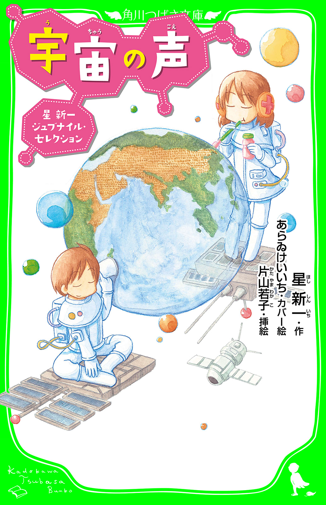

宇宙の声
星新一ジュブナイル・セレクション
星新一・作
あらゐけいいち・カバー絵
片山若子・挿絵

〈保護者のみなさんへ〉
本作品の全部または一部を無断で複製、転載、配信、送信したり、ホームページ上に転載することを禁止します。また、本作品の内容を無断で改変、改ざん等を行うことも禁止します。
本作品購入時にご承諾いただいた規約により、有償・無償にかかわらず本作品を第三者に譲渡することはできません。
本作品を示すサムネイルなどのイメージ画像は、再ダウンロード時に予告なく変更される場合があります。
本作品は縦書きでレイアウトされています。
また、ご覧になるリーディングシステムにより、表示の差が認められることがあります。
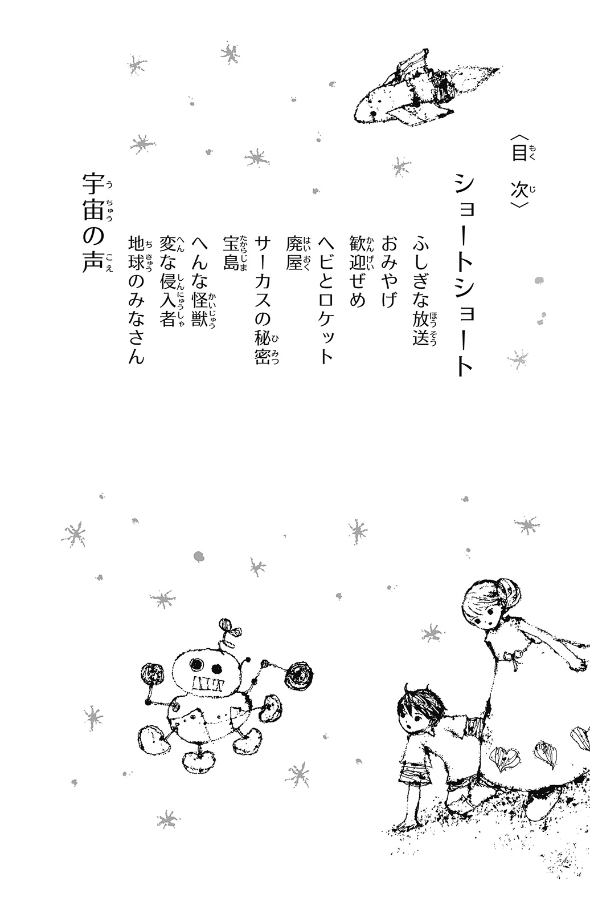
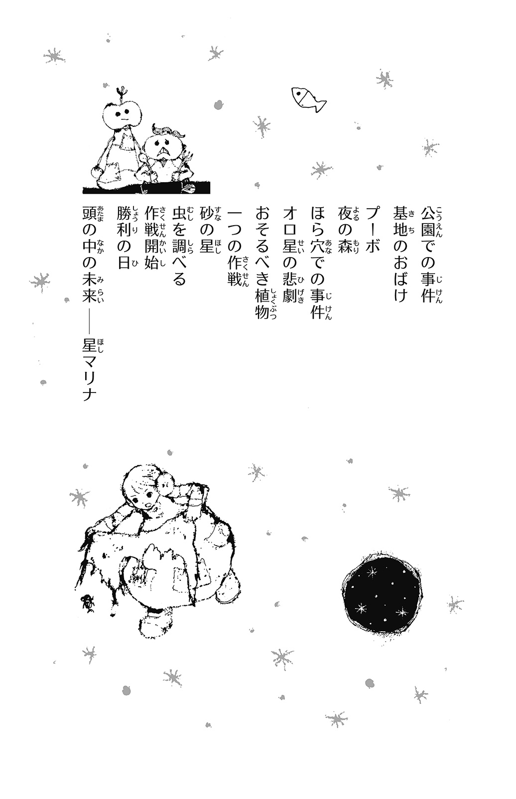
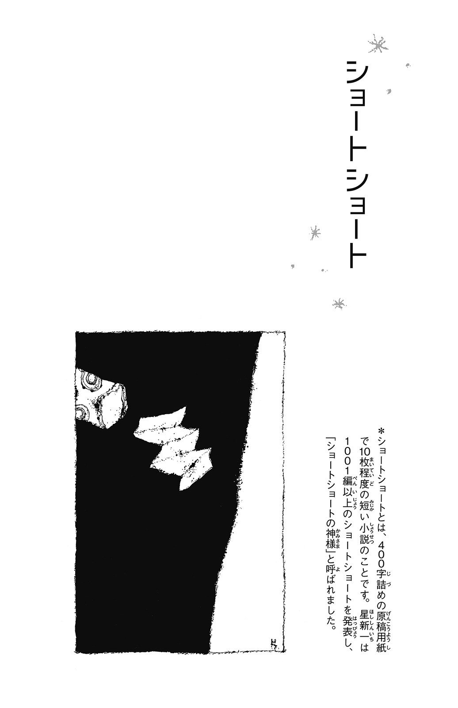
ふしぎな放送
ここは地球から遠く離れた、小さな惑星の上につくられた宇宙基地。水も空気もなく、植物もない荒れはてた薄暗い星だ。建物は銀色のドームで、このような基地は、ほうぼうの星にある。
どこも、なかに何名かの隊員が住んでいた。毎日、空の星々を観測したり、宇宙服を着てそとに出て、地質の調査などをしたりしていた。
ドームのなかの生活は、そう不自由なものではなかった。しかし、退屈でさびしいものだった。地球からの宇宙船は、ごくたまにしかやってこない。
そんな隊員たちをなぐさめるものは、一定時間ごとに地球から送られてくる放送だった。その電波によって、なつかしい故郷のニュースや面白い話題を知ることができるのだ。
「おい、まだかな。地球からの放送は」
その時刻が近づくと、だれからともなくこう言い出す。
「あと五分ほどだ。待ち遠しいな」
みんな、そわそわしてくる。そして、受信機のまわりに集まっていると、やっと地球からの電波がはいってきた。
〈遠い宇宙基地で活躍中のみなさま。この放送をお聞きのことと思います......〉
いつもこの言葉ではじまる。
「この放送を聞いていない宇宙基地など、あるものか」
ひとりが言うと、みんなは笑いながらうなずきあった。アナウンサーの声はつづいた。
〈きょうはまず、とくに重要な放送をお送りします。ひとことも聞きもらさないよう、ご注意ねがいます......〉
みんなは顔をみあわせ、ささやいた。
「なんだろう。いつもの口調とちがうぞ」
「地球で、なにか悪いことが起ったのでなければいいが」
からだを乗り出していると、その放送がはじまった。それはこんなふうだった。
〈コ・コ・コ......〉
みなは目を丸くした。
「なんだ、これは。わけがわからん」
「ニワトリの鳴きまねだろうか。なにかの冗談かもしれないぞ」
「いや、地球の本部が、そんなことをするはずがない。変な悪ふざけで事故がおこったら、とりかえしがつかなくなるからな」
だれもが首をかしげていると、アナウンサーの言葉が変った。
〈ナ・ナ・ナ......〉
やはりわけがわからなかった。
「もしかしたら、暗号かもしれないぞ。メモにとっておいて、あとで研究しよう」
地球からの放送は、このような調子で、つぎつぎとちがった発音を送ってくる。だが、どう考えても、意味のない言葉なのだ。
そのうえ、電波はしだいに弱くなってゆく。受信機の性能をいっぱいに高め、耳を押しつけても、音は小さくなる一方だった。やがて、ついに聞えなくなってしまった。
静かになった受信機を見つめ、みなは青い顔になった。
「電波がとぎれた。やはり、地球に重大な異変が起ったにちがいない。問い合せの通信をしても、これでは応答がないだろう」
「暗号表を調べたが、のってない言葉だ」
「コンピューターにかけたが、解読できない。大変なことになったぞ。地球はほろび、われわれは最後の指示もわからぬまま、宇宙基地にとり残されてしまったのだ。どうしよう」
ため息をつく者、ふるえだす者、泣き出す者が出た。その時、とつぜん受信機が声を出した。ふたたび放送がはじまったのだ。
〈宇宙基地のみなさん。いまの通信は、どこまで聞きとれましたか。全文は「コナルカロフニレコヒニフ」でした。最初の五字しか聞きとれなかった基地は、通信機のアンテナの感度を強くする必要があります。本部に連絡くだされば、そのための資材を貨物宇宙船でお送りします。では、これより本日の地球のニュースを......〉
おみやげ
フロル星人たちの乗った一台の宇宙船は、星々の旅をつづける途中、ちょっと地球へも立ち寄った。しかし、人類と会うことはできなかった。なぜなら、人類が出現するよりずっと昔のことだったのだ。
フロル星人たちは宇宙船を着陸させ、ひと通りの調査をしてから、こんな意味のことを話しあった。
「どうやら、わたしたちのやってくるのが、早すぎたようですね。この星には、まだ、文明らしきものはない。最も知能のある生物といったら、サルぐらいのものなのです。もっと進化したものがあらわれるには、しばらく年月がかかります」
「そうか。それは残念だな。文明をもたらそうと思って立ち寄ったのに。しかし、このまま引きあげるのも心残りだ」
「どうしましょうか」
「おみやげを残して帰るとしよう」
フロル星人たちは、その作業にとりかかった。金属製の大きなタマゴ型の容器を作り、そのなかにいろいろのものを入れたのだ。
簡単に星から星へと飛びまわれる、宇宙船の設計図。あらゆる病気をなおし、若がえることのできる薬の作り方。みなが平和に暮らすには、どうしたらいいかを書いた本。さらに、文字が通じないといけないので、絵入りの辞書をも加えた。
「作業は終りました。将来、住民たちがこれを発見したら、どんなに喜ぶことでしょう」
「ああ、もちろんだとも」
「しかし、早くあけすぎて、価値のある物とも知らずに捨ててしまうことはないでしょうか」
「これは丈夫な金属でできている。これをあけられるぐらいに文明が進んでいれば、書いてあることを理解できるはずだ」
「そうですね。ところで、これをどこに残しましょう」
「海岸ちかくでは、津波にさらわれて海の底に沈んでしまう。山の上では、噴火したりするといけない。それらの心配のない、なるべく乾燥した場所がいいだろう」
フロル星人たちは、海からも山からもはなれた砂漠のひろがっている地方を選び、そこに置いて飛びたっていった。
砂の上に残された大きな銀色のタマゴは、昼間は太陽を反射して強く光り、夜には月や星の光を受けて静かに輝いていた。あけられる時を待ちながら。
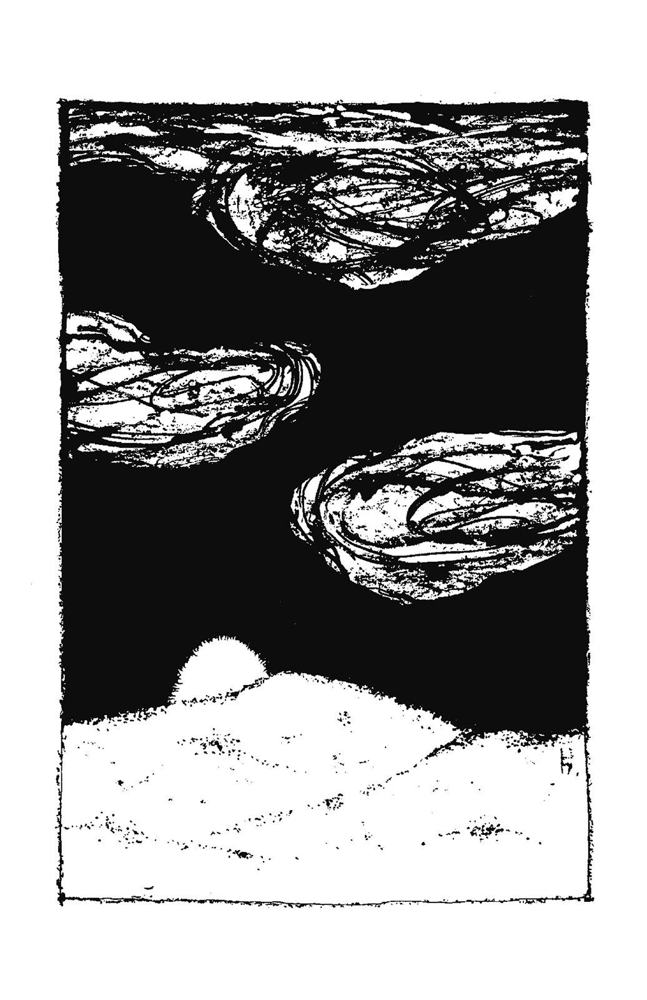
長い長い年月がたっていった。地球の動物たちも少しずつ進化し、サルのなかまのなかから道具や火を使う種族、つまり人類があらわれてきた。
なかには、これを見つけた者があったかもしれない。だが、気味わるがって近よろうとはしなかったろうし、近づいたところで、正体を知ることはできなかったにちがいない。
銀色のタマゴはずっと待ちつづけていた。砂漠地方なので、めったに雨は降らなかった。もっとも、雨でぬれてもさびることのない金属でできていた。
時どき強い風が吹いた。風は砂を飛ばし、タマゴを埋めたりもした。しかし、埋めっぱなしでもなかった。べつな風によって、地上にあらわれることもある。これが何度となく、くりかえされていたのだった。
また、長い長い年月が過ぎていった。人間たちはしだいに数がふえ、道具や品物も作り、文明も高くなってきた。
そして、ついに金属性のタマゴの割れる日が来た。しかし、砂のなかから発見され、喜びの声とともに開かれたのではなかった。下にそんなものが埋まっているとは少しも気づかず、その砂漠で原爆実験がおこなわれたのだ。
その爆発はすごかった。容器のそとがわの金属ばかりでなく、なかにつめてあったものまで、すべてをこなごなにし、あとかたもなく焼きつくしてしまったのだ。
歓迎ぜめ
「艇長。あの星ですね。だいぶ近づいたではありませんか」
乗組員たちは、宇宙船の窓の外を指さして口々にさけんだ。
「ああ、まったく長い旅だった。地球を出発してから、なんの変化もない宇宙の旅を、みなよくしんぼうしてくれた。さあ、そろそろ着陸の準備をはじめよう」
艇長はこう言い、宇宙船内は久しぶりに活気があふれた。気密服の点検をする者、調査用の器具を整理する者、武器の手入れをする者。そのうちに、観測室から、いきごんだ声が伝わってきた。
「艇長、スペクトル分析によると、あの星には水も酸素もあるようです」
「そうか、それなら生物もいるかもしれぬ。ことによったら、ある程度の文明をもった生物がいるかもしれない。調査が楽しみだな。われわれも、広い空間を越えてやって来たかいがあったというものだ。まもなく人類にとって、未知の経験に接することができるのだ」
その星は窓の外で大きくひろがり、宇宙船は着陸態勢にはいった。
「よく注意しろ。攻撃を受けることがないとは限らない。レーダー係は警戒をおこたるな」
「はい、充分に注意します」
緊張のうちに高度は下がった。だが、心配した攻撃もうけなかった。
「あっ、艇長、町らしいものと、そこで動いているものが認められます」
「そうか。ある程度の文明が、あるのだな。よし、あまり驚かせては気の毒だ。あの海岸地帯に着陸し、それから町に向かうことにしよう」
宇宙船は艇長の指示した地点をめざし、軽い衝撃とともに着陸が完了した。ほっとした隊員たちに、観測室からのスピーカーの声が流れた。
「ただちに大気を分析しましたが、呼吸可能です。気密服の必要は、ありません」
「しかし、バクテリアや放射能はどうだ」
「いずれも有害な物はありません。よく検査しました」
「そうか。この重い服をつけないですむのは、大助かりだ。さあ、出よう」
艇長の命令のもと、二重ドアは静かに開いた。隊員たちは、つぎつぎに外へ出た。
「赤っぽい砂ですね。それに、海の色が緑色とは変わっていますね」
「おそらく太陽の光のせいか、海草のためだろう。まあ、その調査はあとにして、まず、さっき見た町へ行こう。どんな文明があるかに、最も興味がある」
隊員たちは、小高い丘に進みはじめた。
「気をつけろ。どんな住民か、わからないからな。おい、おまえは偵察だ。先に行け」
「はい」
と、ひとりが熱線銃をかかえて先に進んだ。みなは警戒と好奇心にみちた目をあたりにくばりながら、あとにつづいた。
とつぜん、激しい金属音が響きわたった。熱線銃が発射されたのだ。隊長は聞いた。
「おい、どうした。なにかあったのか」
「はい、住民たちが、大ぜい集まっていたので......」
と丘の上から偵察が答えた。隊長は、それをたしなめた。
「むちゃなことをするな。攻撃もされないうちに撃つとは。それに万一、相手がそれ以上の武器を持っていたらことだ。これをきっかけに、なにをされるかわからんぞ」
「わかっています。もちろん、ねらって撃ったわけではありません。おどしです。ごらんなさい、たいした連中じゃありませんよ。あんなやつらには機先を制して、こちらの実力を示しておくほうがいいでしょう」
この答えは、たしかだった。丘の上にかけ上がった隊員たちは、二本足で立ってはいるが、長いしっぽを持った、人間の半分ぐらいの身長の住民たちのむれを見た。住民たちは、隊員たちと熱線銃にあたって焼けた植物とを見くらべ、おどおどした様子をしていた。
「なるほど、たいした住民ではなさそうだ。だけど、かわいそうに、びっくりしたらしいじゃないか。これから、やつらに心配するなと伝えるのにひと苦労だぞ」
「そうですね。言葉は通じっこないし、身ぶりだって、簡単には通じるとは思えない」
だれにも名案は浮かばず、隊員たちは立ったまま考えこんだ。しかし、その時、住民たちのほうに動きがおこった。
「あっ、なにかを地面におきましたよ。なんでしょう」
隊員たちが見まもるうち、住民たちはぞろぞろとあとにさがった。隊長は双眼鏡をのぞきながら命令した。
「よし、行ってみよう。よくはわからないが、どうせ、そう恐るべきものではないだろう」
みなは、それでも注意しながら近づいた。
「さっき、やつらのひとりが、われわれに見えるように、これをつまんで口に入れていましたから、食べ物かもしれません」
「おそらくそうだろう。われわれがこれを食べてやれば、あるいは親しみをますきっかけになるかもしれない。しかし、毒がはいっていないとも限らぬ。よく調べてみろ」
と言う隊長の注意で、隊員のひとりは携帯用の分析器を操作した。
「よく調べましたが、われわれに害のある成分は含まれていません。大丈夫です」
そして、そのダンゴのようなものを一つつまみ、口に入れ、ほおをたたきながら言った。
「うまい。案外いい味ですよ」
ほかの者も、それを手に取って食べた。
「ああ、こいつはいい味だ」
みなが食べるのを見て、住民たちは歓声をあげた。その歓声には、うれしそうな響きがこもっているように思えた。
「やつらは喜んでいるらしい。われわれをもてなす、つもりだったのだな。熱線銃でおどかして、悪かったかな」
「いや、熱線銃の威力を見て、神が現れたと思ったのだろう。そして、捧げ物が受け入れられたので、喜んでいるのさ」
「そうかな。しかし、神さまへの捧げ物にしては、量が少なすぎるようだぜ」
隊員たちは笑い声をあげた。恐るるに足りない相手とわかり、歓迎されているらしいと知って、いくらか緊張もやわらいだ。
「さて、こっちでも敵意のないことを示してやりたいが、どうでしょう。この熱線銃を捨ててみせたら」
「それは、ちょっと早すぎるだろう」
「しかし、われわれは、たいていの物をはねかえす防御服を下につけているし、まだ麻酔銃もピストルもあるんです。やつらは熱線銃については、その威力を見て知っています」
そこで、熱線銃に厳重な安全装置がかけられ、地面におかれた。それを見て、住民たちは歓声をあげ、さっきのようにまたあとにさがった。
「見ろ。また、捧げ物だぞ」
みなは、またも住民たちのおいた食物に近づいた。
「こっちの友好的な気分が通じたらしい。だが、油断はするな。慎重に検査をするんだ」
検査を終え、隊員たちはそれを口に入れた。前よりも味もよく、量も多かった。みなは、たちまち食べ終えた。
「やつらのほうの警戒心も、少しずつ薄れているのだろう。ああ、うまかった」
それにつづいて、ひとりは笑いながら言った。
「もっと食べたい。どうでしょう、こんどは麻酔銃やピストルも捨てましょうか」
「ばかなことを言うな。やつらにはそれが武器とわからないんだから、そんなことをしても意味がないぞ」
その期待は、まもなくみたされた。住民たちは、またも食物をおいてあとにさがった。
「やつらは食物を出すことで、歓迎の気持ちを示しているつもりなのだろう。われわれはそれを食べることで、敵意のないことを示そう」
「いいですね。ずっと宇宙旅行用の合成食ばかりで、いささか、あきあきしていたところです。食べて親しみがますのなら、おやすいごようです」
もちろん、食べる前の検査はおこたらなかったが、その気づかいも不必要に思えた。味はさらによくなり、量もふえた。
住民たちは、楽しそうなようすで、つぎつぎと食べ物を運び、ひきさがりながら、みなが食べるたびに歓声をあげた。
「あんなに喜んでいますよ」
「いいことだ。この星の住民は、みないい連中のようだ。いずれ、言葉が通じあうようになるだろう。そして、やつらもわれわれの文明の恩恵に、浴するようになるだろう。また、この星の資源も、われわれの報告によって開発されるのだ」
と、隊長は言った。みなは食べながら、こう語りあった。
「ますます味がよくなってくる。これで親善に役立つのなら、それこそ、こんなうまい話はないな」
「だが、心配なのは腹がいっぱいになったら、それから先、どうやって親善を示すかだ」
「おれはまだまだ食えるぞ。おまえが食えないのなら、おれが食ってやるから心配するな」
「なに、おれだってまだまだ食えるさ。さあ、こんどはどんな味だろう」
隊員たちは先を争うように、足並みを早めて、つぎの食物にむかってかけ出した。
とつぜん、地面がくずれ、深い落し穴がみなを迎えた。
ヘビとロケット
「あの星がどんな状態なのかを、調査しなければならない。われわれ人間が行っても、この地球上と同じように暮らせるかどうかを、知りたいのだ。しかし、探険隊を乗せた宇宙船を送るのは大変だ。作るのにも飛ばせるのにも、巨額な費用がかかる。なにか、いい方法はないものだろうか」
といった問題をめぐって、宇宙研究所の学者たちが相談していた。みな、困ったような顔をしていた。なかなか、名案が浮かばないのだ。その時、エフ博士がやってきて発言した。
「あります。こんなこともあろうかと、まえから、わたしが研究していました」
「いったいどんなことなのですか」
ほかの学者は身を乗り出した。エフ博士は、そう大きくはないが細長いロケットを手にして言った。
「あの星にむけて、これを送るのです。なかには頭をさきにして、ヘビが一匹はいっています。サルや犬とちがって、ヘビは細長いので便利です」
「ヘビとは変わった思いつきですが、まあいいでしょう。しかし、途中でのエサは、どうするのです」
「その必要は、ありません。大気圏を抜けて宇宙の空間に出ると、温度が下がり、ヘビは冬眠に入ります。だから、エサなしでも、生きたまま、むこうの星へ到着できるのです。また、冬眠中はあまり呼吸をしませんから、酸素を大量に積まなくてもすみます」
「そして、むこうへ着くと、しぜんに冬眠からさめるというわけですか。それから、どうなるのです」
「いま、お目にかけましょう」
こう言いながら、エフ博士は持っていたロケットを床に置いた。先端の部分が開き、笛の音が響きはじめた。録音テープが、回りはじめたのだ。その音につれて、ヘビがなかからはい出してきた。エフ博士は、とくいげに説明した。
「インドのヘビ使いから思いつきました。笛の音を聞くと外へ出てくるように、ヘビを訓練したのです」
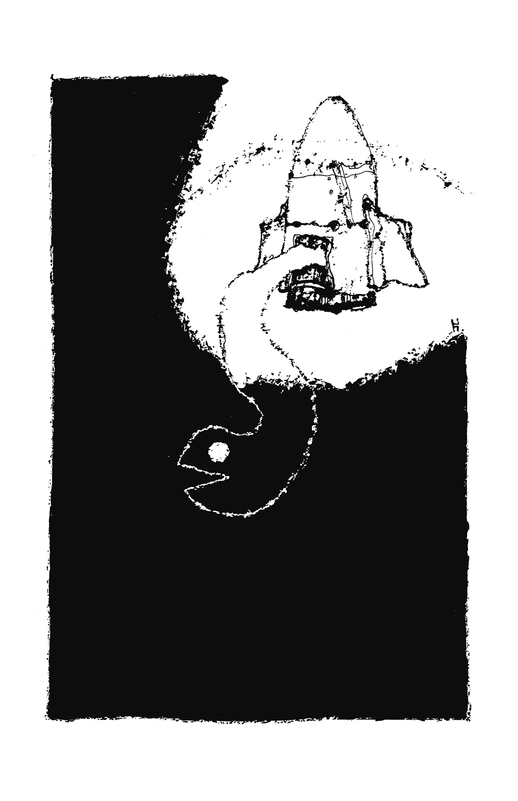
ヘビはあたりを動きまわっていた。だが、やがて笛の音がやむと、ロケットへ戻り、頭からもぐりはじめた。
「ヘビには、穴へ入りたがる習性があるのです。また、ロケットの奥にはエサもおいてあります。かくして、ヘビが戻ってエサを食べると、ふたたび先端の部分が閉じ、ロケットは飛び立ち、自動的に地球へと帰ってくるしかけになっているのです」
「なるほど。これで無事に戻ってくれば、ヘビが行っても大丈夫、すなわち、人間が行っても安心と、判断できるわけですね」
「そうです。わたしたち人間にかわって、ヘビが身をもって調べてきてくれるのです」
みなは、感心してうなずいた。しかし、ひとりが気になる点を質問した。
「こんなことはあまりないでしょうが、たまたま着陸した場所が噴火口のなかだったとか、ロケットから出たとたんに猛獣にふみつぶされたりした場合は、困りますね」
「もっともな心配です。しかし、その問題はロケットを一台だけでなく、何台か送れば解消すると思います。みながみな、そんな不運な事故にあうこともないでしょう。要するに、一匹でも帰ってきてくれれば、その星の安全性が確認できるのですから」
学者たちは、この案に賛成した。探険隊を送るより、はるかに安上がりだし、人間が危険をおかさなくてもすむ。さっそく十台ばかり作られた。それぞれにヘビが入れられ、ロケットはめざす星に向けて、つぎつぎに発射された。
あとは、帰るのを待つばかり。だが、予定の日がすぎ、いくら待っても、一台も帰ってこなかった。
「どうもだめだったようだ。ロケットから出たとたん、ヘビたちは死んでしまったのだろう」
「気の毒な気もするが、結果は得られたのだ。人間が行っても、生存に適さない状態であることが、判明した。あの星への大がかりな探険計画は、当分のあいだ延期して、べつな星を目標とすべきだ」
地球上でこのような会話がかわされている時、ヘビたちはどれも、まだ死なずにいた。生存に適さないどころか、地球以上に、生きるのにつごうのいい星だったのだ。食物となるものは、いくらでもある。たとえばカエルにしても、地球のより肉づきがよく、味もいい。ヘビたちはロケットから出たとたん、それらを思う存分に食べはじめたのだ。
ロケットの奥にあるエサなど、どのヘビも見むきもしない。また、たとえそれを食べる気になったとしても、腹が大きくふくれていては、入口でつかえて、もぐり込みようがないのだった。
廃屋
夕立ちを降らし終えた夏雲が山脈のむこうに去り、青空のうえに、また強い陽の光があらわれてきた。暑さはパイプ・オルガンの音のように、底力をともなって湧きあがりはじめた。あたりには水蒸気とまざった草いきれがみなぎり、少しはなれた所には、濃い緑にみちた森があった。そのなかからは、限りないセミの鳴声が......
ここは都会からずっとはなれた、ある山すそ。近くには人のけはいはなく、動くものといえば、時おり風で動く夏の花と、飛びかうアブぐらい。
人のけはいはなかったが、森のはずれに一軒の家があった。傾きかけた家で、まわりでは石垣の跡らしいのが苔むしていた。
エンジンの音が空気をふるわせ、一台の小型車が細い道を揺れながら走ってきて、そのそばで止まった。二人の青年がおりた。このあたりの地図をひろげ、ひとりが、汗ばんだ指でその上を叩いた。
「ちょうど、ここを通過することになる」
「変な家があるな。なんだ、これは」
「村の人の話だと、落ち武者が住みついた家だそうだ。もっとも、四百年ほど昔のことだがね。だが、その一族が滅んでからは、亡霊が出るとうわさされ、ずっと住む者も近よる者もなかったそうだ」
「面白い伝説だな。しかし、工事は進めなくてはならない。たかが一軒半日もあれば片づくだろう」
二人の頭で、ヘルメットが白く輝いていた。彼らは土木技師。この山すそをかすめて、高速道路が建設されるのだ。計画は順調にはかどり、道路は近くまで伸びてきていた。耳をすますと、かすかに建設機械の音を聞くことができた。
「なかに、なにかあるだろうか」
「あるものか。だが、のぞいてみるか」
二人は家に近よりかけたが、ひとりが足をとめて、声をあげた。
「あっ」
「どうした」
「屋根から石ころが落ちてきた。ヘルメットをかぶってたので、なんともなかったが」
「古い家だからな。少しの震動でも崩れるのだろう。入っては危い。ブルドーザーを呼んで、取りこわそう」
二人は車にもどり、小型の無線で連絡をとった。
「すぐ来るそうだ。それまで待とう」
車内のクーラーは、ほどよくきいていた。
うす暗く、カビのにおいのこもった家のなかで、かすれたような声がおこった。
「なにものかが、迫ってきたようです」
なにひとつ動かないなかで、べつな声が低く答えた。
「そうか。だが、おそれることはあるまい。われわれが落ちのび、ここにたてこもって以来、四百年ちかく、侵入を許したことはない。そうであろう」
「はい。さきほどの二人は、屋根から落とした石に驚き、ひきかえしていったようです。まず、安心でございましょう」
しばらく声がとぎれ、床下の虫の声だけになった。しかし、はげしい地響きの迫ってくるけはいがして、声たちは、ふたたびささやきあった。
「妙な音が近づいてくる」
「ふしぎな形をした乗物でございます。手ごわそうに思えます。いかがいたしましょう」
「しぶといやつらじゃ。あの枯れかけた木を倒してみよ」
石垣に近づいてくるブルドーザーの前に、木が倒れて横になった。しかし、進むのを止めることはできなかった。
「相手はひるみませぬ」
「では、もっと近づいた時、石垣を少し崩し、押しつぶしてしまえ。いたしかたない」
ブルドーザーの先端が石垣に当ると、石のいくつかが転げ落ちた。しかし、その鋼鉄の車体は、へこみもしなかった。運転していた男は、技師たちをふりむいて言った。
「簡単すぎて、手ごたえがないくらいですよ」
「そうか。作業がはかどるな。よし、つぎは家のほうをたのむ」
技師は作業の指揮をとった。石垣はたちまち崩され、運転手は家にむけてハンドルをまわした。
「敵はいっこうにひるみませぬ」
と、家のなかの声たちは、あわてていた。
「では、木の葉を散らし、セミどもを黙らせて、驚かせてみよ」
やがて、理由もなく何枚かの青い葉が散り落ち、一瞬、セミの声が鳴きやんだ。静寂がただよう。しかし、この不吉なムードも、ブルドーザーのたてる響きと震動のなかでは、少しも意味をなさなかった。
「もはや、防ぎようがありませぬ」
「ひるむな。われらは、この家を守らねばならぬ。扉をかたく閉ざせ」
「立ち退いたほうがいいと存じますが」
「いかん。四百年このかた住みなれたこの家を捨てて、移るあては、ほかに求めようがない」
風もないのに、音をたてて扉が閉じた。だが、ブルドーザーの運転手はそれを気にもとめず、鉄の刃をはげしく家の一角に押し当てた。そして、ちょっと首をかしげた。
「おかしいな。くさりかけた家なのに、意外に丈夫だ」
家は、せいいっぱい抵抗を示していた。しかし、長くはつづかなかった。悲しげな音とともに壁が崩れ、古びた板がはがれ、年月のにおいを含んだほこりが舞いあがった。
鉄の刃は容赦せずに作業を進めた。床下のカエル、天井のネズミ、柱の割れ目の虫やクモが、不意の明るさにとまどいながら、草むらへ、森へと逃げていった。散らされたカビの胞子は、光のなかをどこへともなく流れていった。
「このまん中の柱が、なかなか倒れません」
運転手の声に、技師は指示を与えた。
「馬力を最高にあげて、やってみろ」
ブルドーザーはいったん後退し、エンジンの音をいちだんと高め、勢いをつけてぶつかった。柱は苦しそうな叫び声をあげ、やがて、ついに地面に横になった。
「やれやれ、全部こわれました」
「おい、あそこに古い井戸がある。工事の邪魔にもなるから、このがらくたを集めて埋めてしまってくれ」
「はい。そうしましょう」
壁土、瓦、ぼろぼろの木片などが、押されて穴のなかに落ちていった。何回かの往復でその作業は終り、エンジンの音がやんだ。あたりには、静かさがもどってきた。
「さあ、ひと休みするか」
「ええ。明るく、さっぱりした眺めに変わりましたね」
運転手と技師たちは汗をぬぐい、息をついた。その時、技師のひとりが、ちょっと首をふった。
「人の声がしたようだぜ」
「聞こえなかったがな。どんな声だ」
「なにか疲れはて、あきらめ、長い眠りに入るような、ため息に似た声みたいだった。そら耳だろうな」
「陽に当りすぎたせいじゃないか」
「ああ、暑さのせいだろう。いま埋めた井戸のあたりからだったが、そんな音がするはずもないものな」
声は、もはや聞こえなかった。それからみなの話題は、やがて道路が完成して、トラックやスポーツカーなどが、高速で行きかう日のことのほうに移っていった。
サーカスの秘密
そのサーカスは、大変な人気だった。動物たちが、とても珍しい芸をする。それを見物しに、毎日たくさんのお客がやってくる。
満員だったお客が帰り、静かな夜になった。サーカスの団長は自分のへやにひきあげ、ゆっくり休もうとした。
その時、ひとりの男がたずねてきた。知らない人なので、団長は聞いた。
「どなたですか」
「サーカスを見物していた者です。じつに、すばらしかった。木のぼりをするウサギなど、はじめて見ました。本当にすばらしい」
こう言われると、団長も悪い気はしない。疲れているから早く帰って下さいとも言えない。
「そうですか。みなさんに面白がっていただければ、こんなうれしいことはありません」
「だれでも喜びますよ。強そうなトラも、ネコのようにおとなしかった。どんな方法を使うのか知りませんが、これほどまでに訓練なさったあなたは、偉大な天才と呼ぶべきでしょう」
あまりほめられたため、団長はいい気になって、その方法をしゃべってしまった。
「動物を訓練するのは、たいしたことではありません。しかし、この装置を作りあげるのには、ずいぶん苦心しましたよ。長い年月をかけ、何度も失敗をくりかえしました」
と、団長は懐中電灯のようなものを出してきた。ダイヤルだの、複雑な形のコイルだのがくっついている。男は、それに目をやりながら聞いた。
「なんですか、それは」
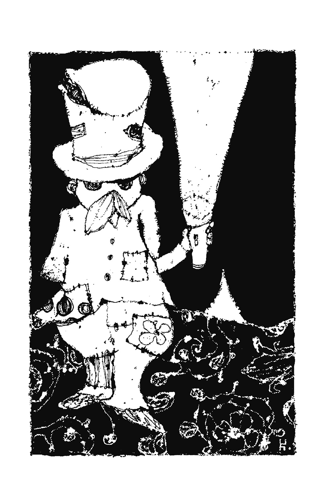
「早くいえば、電波を利用し、動物に簡単に催眠術をかける装置です。このダイヤルには、いろいろな動物の絵がかいてあるでしょう」
「ネコの絵もついていますね」
「このネコのところに目盛りをあわせ、トラにむけてボタンを押すとします。するとトラは催眠術にかかり、自分はネコだと思いこむわけです」
「なるほど。おとなしかったのは、そのためだったのですね。サーカスには、せんたくをするライオンも出ていましたね」
「あれは装置の目盛りをアライグマにあわせ、ライオンに催眠術をかけたのです。チンチンをするウシや、台を飛び越えるブタもごらんになったでしょう。いずれも、この装置のおかげです。また、もとに戻したい時は、このゼロの目盛りにあわせてボタンを押せばいいのです」
団長はとくいそうに説明した。聞いているうちに男は身を乗り出し、男の目は輝いてきた。
「それさえあれば、だれでもすぐサーカスが持てるというわけだ。ぜひ、その装置をわたしにゆずって下さい」
「だめです。わたしが苦心して作ったものだ。これだけは、いくらお金をもらっても、他人には渡せません」
団長はことわったが、男はあきらめなかった。
「欲しくて欲しくて、たまらなくなった。どうしても渡さないのなら......」
男はポケットからナイフを出し、振りまわそうとした。しかし、団長が装置のボタンを押すほうが早かった。それから、団長は装置をしまいながらつぶやいた。
「やれやれ、乱暴な人もいるものだ。罰としては、しばらくそのままでいて、ここで働いてもらうことにするよ」
つぎの日からサーカスに新しい人気者が加わった。動物ではなく、チンパンジーのまねのうまいピエロだ。本当にうまく、本物のチンパンジーそっくりだった。
お客たちは「どうやったら、あんなにうまくできるようになるのだろう」と話しあい、ふしぎがりながらも、大喜びして手をたたくのだった。
宝島
ある日、事業家のアール氏は、秘書をつれて海岸を散歩していた。秘書といっても若い女性ではなく、相当な年配の男だった。しかし、忠実な性格の持ち主で、信用できる人物だった。
アール氏は仕事が一段落し、ひまができたので、休養のためにここへやってきたのだ。海は青く遠くまでひろがり、その上を渡ってくる風は、すがすがしいにおいを含んでいた。海水浴の季節にはまだまがあるせいか、人影はほかにはほとんどない。
「ああ、いい気分だ。いそがしい毎日が、どこか遠くへ行ってしまったようだな」
とアール氏はのびをしながらつぶやき、秘書はうなずいた。
「さようでございます」
「しかし、いつまでも休んでいるわけにはいかない。つぎの事業の構想をねり、それにとりかからなければならない」
「さようでございます」
「だが、そのためには資金を集めなければならない。これには、ひと苦労だな」
「さようでございます」
秘書はさからわず、あとに従って歩いていた。やがてアール氏はふと足をとめ、波打ちぎわを指さしながら、
「あれはなんだろう」
と言った。なにかが日光を受けて、キラキラと光っている。
「はい。調べて参ります」
秘書は急ぎ足で歩いていって、その半ば砂に埋もれている品を掘り出した。それはビンだった。古ぼけていて、栓がしてある。彼は海水で洗い、持ってきて報告した。
「こんなビンでございました。たいした品ではありません。捨ててしまいましょうか」
アール氏は受け取り、陽にかざしてみた。だが、不透明のため、なかは見えない。彼は手で軽く振ってから言った。
「いや、待て。なかに、なにかが入っているようだ。ちょっと気になる。あけてみろ」
「うすきみわるい感じです。魔神でもでてきたら、どうなさいます」
「それならちょうどいい。金を集めてこいとたのむさ。大丈夫だ。あけてみろ。わたしが責任を持つよ」
たよりない命令だったが、秘書はそれにとりかかった。しかし、きつく栓がしてあって簡単にはとれない。結局、石でビンを割ることにした。なかには紙片が入っていた。秘書はそれを砂の上にひろげ、首をかしげた。
「なんでございましょう」
「うむ。図のようなものが書いてあるな」
と、アール氏ものぞきこんだ。よく見ると、その古ぼけた紙に書いてあるのは、どこかの島の地図らしかった。さらにその一箇所には、意味ありげな十字の印が記されてある。
アール氏は手を叩き、興奮したような声をあげた。
「うむ。これはすごい物が手に入った」
「なんなのでございますか」
「むかし、海賊が宝をかくした場所を、記録したものにちがいない。信じられないような幸運だぞ」
「それは、おめでとうございます」
秘書はあいづちを打った。しかし、アール氏はまもなく落胆したような表情になり、地図を手に、くやしそうに言った。
「しかし、これだけではだめだ。この島の場所がわからない。これだけでは、手のつけようがない」
「あ、お待ち下さい。その紙の裏にも、なにかが書いてあります」
と秘書に注意され、裏返してみると、そこには島の位置を示す海図が書かれていた。アール氏は、喜びをとり戻した声になった。
「これで完全だ。宝への道は、すべて明瞭になったわけだ。あとは、出かけていって手に握るだけでいい。こうなったからには、さっそく準備にとりかかることにしよう。おまえもいっしょに来てくれ」
「しかし......」
「この秘密を知っているのは、わたしとおまえだけだ。ほかの者を参加させると、それにも分け前をやらなければならなくなる。苦労は多いかもしれないが、わたしたち二人で分けたほうが、有利というものだぞ」
「さようでございますな」
分け前にあずかれると知り、秘書も目を輝やかせて承知した。
アール氏は、必要な準備に手をつけた。資金を作り、小型だが優秀な船を買い、燃料や食料や水を積みこんだ。また、それと並行して、秘書とともに船の操縦法を勉強した。すぐに身につくものではないが、二人は想像を絶するような熱心さだった。たちまちのうちに、二人あわせればなんとかなるまでに、こぎつけることができた。
すべては完了。やがて出航の時となり、船は港をはなれ洋上へと進みはじめた。なにもかも二人でやるため、船の仕事は相当に忙しかった。しかし、張り切っているので、苦にもならず、疲れも感じない。アール氏は話しかけた。
「どうだ、順調に進んでいるか」
「はい、いまのところ大丈夫でございます」
「しかしだな、こんなにすばらしい船旅というものは、ちょっとないだろうな。わたしたちは胸を期待でふくらませ、少しずつ近づいているのだ。波の音は、わたしへのお祝いの音楽をかなでているようだし、太陽の光は、祝福の視線をそそいでいるようだ。こんな気分は、普通の船旅では味わうことができない。それだけでも、もうけものだ」
平穏な数日がたち、双眼鏡で眺めていた秘書が報告した。
「前方に島が見えました」
地図と対照してみると、問題の島にまちがいないようだった。小さな島で、接近して双眼鏡で観察すると無人島らしい。
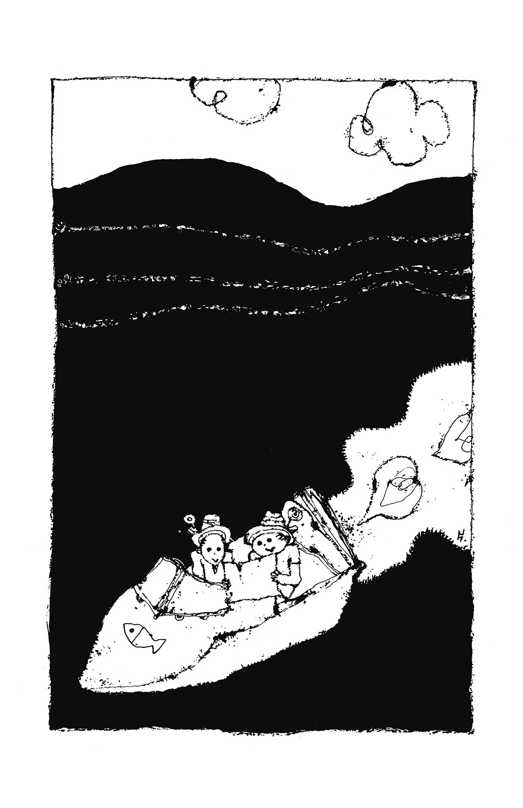
「さっそく上陸しよう。シャベルを忘れるな。不要とは思うが、念のため武器を持っていこう。そうだ、お祝いの乾杯をするため、酒とグラスもだ」
こんな大さわぎをしながら、二人は島に上陸した。地形は地図と一致していて、とまどったり迷ったりすることもなかった。
林は緑の濃い葉の樹が多く、ところどころに熱帯の花が咲いている。そして、やがて印に相当する地点についた。注意して調べると、ほら穴がみつかった。
「なにもかも地図の通りだ。この奥で、宝がわたしたちを待っているのだ。胸がどきどきする。さあ、入ってみよう」
アール氏は照明器具をかざしながら入り、秘書もつづいた。しかし、宝をおさめてあるような箱も袋も見あたらない。また、かつて宝があったような形跡もない。アール氏は、うろたえたような声を出した。
「ふしぎだ。こんなはずはない。どういうわけなのだろう」
「もしかしたら、だれかが先にやってきて、宝を持っていったのかもしれません」
「いや、あのビンの地図を、わたしたちより先に見た者はなかったはずだぞ」
二人はあきらめきれず、ほら穴のなかを調べまわった。そのうち、秘書が言った。
「ごらんなさい、これを」
「なんだ、なにか見つかったか」
「この壁です」
照明をむけてよく見ると、そこには、べつな島の地図が書かれてあった。やはり、その、ある地点に、印がしるされてある。
「なるほど、そうだったのか。用心深い方法というわけだな。まっすぐには行けないようにしてあったらしい。宝をかくすからには、それくらいの慎重さがなければならない」
アール氏は感心し、元気をとりもどし、それを写しとった。秘書はきいた。
「あとで他人に見られないように、壁のほうは消してしまいましょうか」
「いや、そんな必要はない。宝を先に見つけてしまえば、もう価値はなくなるのだからな。さあ、それよりも出発だ」
二人はふたたび希望にあふれ、壁にしるされてあった島へと船を進めた。しかし、到着したその島の印の場所には宝はなく、発見したものといえば、石にきざまれたまたもべつな島の地図だった。
かくして、アール氏の船はいくつかの島をめぐりつづけた。そのあいだには、海流の激しい海を横ぎったり、岩礁の多い個所をも通過した。ときには強い嵐にもであい、船はかなり傷ついてしまった。また、燃料や食料も、残り少なくなってきた。秘書はいささかねをあげた。
「いかがでしょう。もういいかげんにあきらめたら。これではきりがありません」
「なにを言うか。これだけ手がこんでいるというのは、宝がすばらしいことを意味している。ここで投げ出せるものか。つぎの島には宝があるかもしれない。その寸前で引きあげたりしたら、一生をずっと後悔しつづけなければならなくなるぞ」
「そうはいっても、船を修理しなかったら、沈没するかもしれません。それでは、もともこもなくなってしまいます」
「その点だけは、じつはわたしも心配だ。といって、帰って出なおすのも大変だ。どこか近くに、それをやってくれる港があればいいが......」
期待するのは無理のようだった。しかし、なんという幸運。通りがかりの島に、小さな港があるのを見つけた。
双眼鏡で眺めると店があり、船の修理もするという看板がある。二人はほっとし、そこに船を寄せた。
船を修理することもできたし、食料や水を補給することもできた。いくらか値段は高かったが、この際、問題にするほどのことはない。アール氏は、店の主人に感謝の言葉をのべた。
「いや、おかげで助かりました。これで航海をつづけることができます。お礼のいいようもありません」
「いいえ、船の修理などがわたしの商売です。ありがとうと申しあげるのは、こちらのほうでございます」
と主人は愛想がよかった。そのとき、アール氏はふと気がついたことを質問してみた。
「しかし、こんな小さな港だし、このへんは船の通行が多いとも思えない。よく商売が成り立つものだな」
「そこは宣伝ですよ。わたしの考えた名案のおかげで、お客さまはかなり多いのです」
「どんな方法なのだろうか。ぜひ知りたいものだ」
アール氏は好奇心を高めた。
主人はあっさり承知し、店の奥から印刷物の束を持ってきて示した。それはいずれも古ぼけた地図であり、アール氏が拾ったものと同じだった。
「これですよ。こんなものを、大量に印刷しました。ビンに入れて、どんどん海に投げこんでいるのです。おかげで、けっこう繁昌しています。宣伝ビラだったと気がついても、自分の愚かさを他人には話せないらしく、いまだにお客さまはつづいています。いえ、あなたさまはちがうでしょうが。では、どうぞ、いい航海を......」
へんな怪獣
ある日、空のかなたから大きな宇宙船があらわれ、地球に近づいてきた。
「いったい、どこの星から、なにしにやってきたのだろうか」
「乗っているのが友好的だといいがな」
人びとが話しあいながらながめていると、それは町はずれに静かに着陸した。やがてドアが開いた。なかから出てきたものを見て、みなは悲鳴をあげた。
巨大な怪獣だったのだ。からだはカンガルーのような形で、手はゴリラのようだった。頭はオオカミに似て大きく、ツノもあった。全身が灰色のウロコでおおわれていて、みるからに強そうだ。
まわりをとりまいて警戒している軍隊は、攻撃態勢をとった。しかし、すぐには攻撃せず、まず話しかけがこころみられた。
「わたしたち地球人は、戦いを好むものではありません。どんな目的でおいでになったのですか。おっしゃってくだされば、できるだけお役に立ちたいと思っております」
といった意味のことを、身ぶりや絵や、字や声や電波で伝えようとしたのだ。あんな宇宙船に乗ってきたのだから、相手は文明を持っているはずだ。それなのに、なにをやっても、まったく通じなかった。
みんながあきらめかけたころ、怪獣はわけのわからない叫びをあげ、ぎごちない歩き方で少し動いた。そばにあった木が三本ほど、ふみつぶされた。
「もしかしたら、長い宇宙の旅で、おなかをすかしているのかもしれない。食べ物を与えてみよう」
いろいろな食べものや飲みものが大量に集められ、怪獣の前に並べられた。なにを食べるかなと見つめていると、怪獣はそれらをけとばしてしまった。
「お気に召さないらしい。しかし、失礼なやつだな」
そのうち、失礼どころではない大さわぎになってきた。怪獣があばれはじめたのだ。近くのビルを押し倒した。また、自分の乗ってきた宇宙船をも、なぐったり、引きさいたりしてバラバラにこわしてしまった。おそるべき力だった。
「これはいかん。このままだと、人類がやられてしまう」
「そうだ。自分の宇宙船までこわしてしまうのだから、あれは頭がおかしいにちがいない」
狂ったようにあばれる怪獣にむけ、攻撃がはじまった。なにしろ強い敵であり、勝てるかどうかわからない。しかし、どんなことがあっても、怪獣はたいじしなければならないのだ。自信はないが、まず数発の砲弾が発射され、命中した。すると、怪獣は簡単に倒れ、身動きをしなくなった。
「いやに、あっけないな」
おそるおそる近づいて調べると、思いがけないことがわかった。怪獣は生物でなく、ロボットだったのだ。
「なんで、こんなものがやってきたのだろう。どこかの星の、オモチャなのだろうか」
「いや、こんなぶっそうなオモチャは、考えられない。オモチャなら、説明書ぐらいついていていいはずだ」
「それなら、地球を征服するために送りこまれた兵器だろうか」
「兵器にしては、たわいなさすぎた」
どんなに話しあっても、結論はでなかった。こうして事件は終ったが、みな変な気持ちだった。
それからしばらくたったある日。またも一台の宇宙船があらわれ、着陸した。ドアが開いたが、こんどはなにも出てこない。そのかわり、声が響いてきた。
「どうぞ、おはいりください。これは無人貨物船で、なかには、みなさんへのおくりものがはいっております......」
そういわれても、人びとは不安だった。まえにやってきた怪獣はやっつけたものの、ゆだんはできない。すると、それに答えるかのように声がつづいた。
「......ご安心ください。危険なことはありません。あなたがたにおくりものをさしあげたものかどうか、このあいだ試験をさせていただきました。ロボット怪獣の目にしかけたテレビ・カメラで、あなたがたの動きや言葉を調べました。みなさんは、まず話しあいをなさろうとし、それがだめでも親切に食べ物をくださった。しかし、むちゃなあばれかたをはじめると、平和をまもるために勇敢に戦おうとなさった。すべて合格です。そのような星のかたを選んで、おくり物をさしあげているのです」
人びとは、宇宙船のなかをのぞいた。声の告げた通りだった。そこには、美しい花や珍しいくだもののタネと、その育て方を書いた本、きれいな宝石、貴重な薬、いろいろな便利な装置などがいっぱい......。
変な侵入者
ここは、キダ氏の別荘。高原地方にあった。近くには緑の林が広がっていたし、湖を見わたすこともできた。また、少し歩けばゴルフ場にも行けた。眺めがいいばかりでなく、その建物もかなり立派で大きかった。
キダ氏は海中住宅関係の、資材や部品の製造会社を経営していた。この業界は競争が非常に激しく、技術開発や営業面で少しでも油断すると、すぐ他社にけおとされてしまう。
しかし、キダ氏はなかなかの手腕家だった。会社が順調に発展しているのは、ほとんど、彼ひとりの力によるといっていい。したがって収入も多く、このような別荘をもつことができたのだ。
キダ氏は一週間ほど滞在する予定で、休養のためこの別荘へやってきた。静かな空気にひたりながら、新計画の構想を、ゆっくり検討しようとも思っていた。
別荘に着いて一服していると、別荘番をかねている男がとりついできた。
「あの、妙なものがまいりました」
「なんだ、来客か。それなら来週、会社のほうで会うと伝えてくれ。いまは、休養中なのだから」
「いえ、それがロボットなのでございます。ご注文なさったのではありませんか」
「ロボットだと。知らぬ。そんなものを買ったおぼえはない。わたしは、日常生活ではロボットを使わない主義だ。なにかのまちがいだろう。帰らせろ」
とキダ氏は言った。しかし、男は困ったようなようすだった。
「それが、だめなのです。どう話しかけても、なにも答えません。耳が聞こえないのか、口がきけないのか、しまつにおえない、しろものです。あ......とうとう、勝手にはいってきてしまいました」
男が指さすほうを見ると、問題のロボットがこっちへやってくる。あまり見かけないタイプだが、落ち着いた銀色をしていて、形も上品だ。しかし、わけもなく侵入されては、迷惑だ。キダ氏は声をかけた。
「おいおい、わたしはロボットに用はない。家をまちがえたのだろう、帰ってくれ」
いっこうに、ききめはなかった。命令を無視するロボットなど、聞いたことがない。キダ氏は男に言った。
「話しても通じないらしい。押し出してしまってくれ」
「はい......」
男はこわごわ、ロボットを押した。しかし、効果はあがらなかった。ロボットの表面が、特殊加工されているらしい。つるつるしていて、手がすべって、どうしようもないのだ。勢いよく体当りしてみたが、なめらかすぎて力が加わらず、横にそれてしまう。男はキダ氏に報告した。
「ごらんのとおりです。わたしの手にはおえません」
「なにか、方法があるはずだ。なんとかして追い出せ」
キダ氏も手をかし、さらには近所の人にも来てもらって、いろいろと試みた。棒を使ってみたり、ナワでしばろうとしたりした。しかし、ロボットは氷以上に、きわめてなめらかで、すべて失敗に終った。
といって、ロボットのほうは、べつにあばれるわけでもなく、キダ氏のそばにじっと立っているだけだ。だが、無害らしくても、正体不明のロボットにくっつかれては、いい気持ちではない。なんとか、帰ってもらわねばならない。
キダ氏は、ロボットをよく観察した。製造会社の名がわかれば、そこに電話し、取りに来させようと思ったのだ。しかし、手がかりになるようなことは、なにも書かれていなかった。これでは、文句のもってゆき場がない。
考えたあげく、キダ氏は警察に電話して訴えた。
「じつは、変なロボットにつきまとわれて、困っているのです。なんとかしてください」
「で、どんなロボットなのですか」
「ええと、色は......」
と、キダ氏はくわしく説明した。すると、警察はさらに聞いてきた。
「なにか、あばれでもしましたか」
「いや、いまのところは......」
「それでは、警察の出る幕ではありません。物品をこわすとか、被害が発生すればべつですが」
「しかし、生活が乱されます。警察が力を貸してくださっても、いいでしょう」
「お気の毒ですが、これは規則です」
期待に反した、そっけない返事だった。まったく官僚的だ。警察がたよりにならないとわかり、キダ氏は腹をたてた。どうやら、自分の力で始末しなければならないようだ。
いい作戦も思いつかないまま、キダ氏はロボットを眺めていた。いまに、なにかをはじめるのではないかと思ったのだ。性格や目的がわかれば、対策の立てようがある。だが、ロボットはなにかをするけはいを示さなかった。キダ氏はあきらめ、ゴルフでもしようと思い、服を着かえて外へ出た。
すると、ロボットはあとについてくる。ゴルフ場を回りはじめても、やはり同じだ。ゴルフのバッグぐらい持ってくれてもいいと思ったが、ロボットはなにもせず、ただいっしょについてくるだけなのだ。キダ氏は気が散って、あまりいい成績をあげなかった。
別荘に戻って、キダ氏は食事をはじめた。その時も、ロボットはそばに立ち続けだった。しかし、少しだけ動作をした。テーブルの上の料理を、ちょっとつまみ食いしたのだ。キダ氏は首をかしげて言った。
「おまえは、なんのために作られたのだ。どこからやってきたのだ。なにも働かないロボットなど、わけがわからん。しかも、つまみ食いという、ロボットらしからぬことをやるとはな......」
しかし、ロボットはなにも答えず、正体は少しも判明しない。追い払うのが不可能となると、こっちが逃げる以外にない。
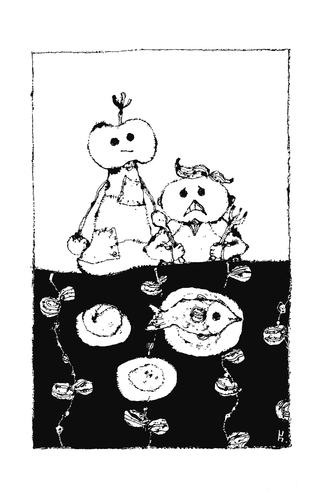
キダ氏は自動車に乗り、都会の自宅に帰ろうとした。しかし、ロボットもさっと車に乗りこんでしまう。その時の身動きだけは、いやにすばやいのだ。車外に押し出そうとしても、手がすべって力がはいらない。何回か試みたあげく、キダ氏はそれをあきらめ、帰宅をやめた。
覚悟をきめて、ベッドにはいった。夜中に飛びかかってくるのかもしれないという不安はあったが、ほかに方法はない。追い払うことも逃げることもできず、警察もたよりにならないのだ。ロボットは人を殺傷しないという原則を、信頼するほかはなかった。
しかし、なにごともなく朝になった。あたりを見まわすと、ロボットは消えてもいず、ベッドのそばに立っていた。ずっと、そこに立ち続けだったらしい。
キダ氏はロボットに、いくらか親密感をもった。敵意はないらしいと、わかったからだ。こんな生活が、三日ほどつづいた。依然としてロボットは帰ろうとせず、なにもやらず、正体不明のままだった。
ある日の午後、キダ氏は散歩に出た。人通りのない山道を、ゆっくりと歩いた。例によって、ロボットがついてくる。
景色のいい場所に来て、キダ氏は足をとめた。ロボットもとまる。影のような存在だった。しかし、キダ氏はそんなことにかまわず、パイプをくゆらせながら、湖や遠くの山々をぼんやりと眺めていた。
その時、とつぜん変化がおこった。ロボットが不意に動いたのだ。それとほとんど同時に銃声がし、なにかに弾丸の当る音がした。つづいて、もうひとつ銃声。その弾丸もロボットに当ってそれたらしい。キダ氏は驚き、ふるえながら身を伏せた。
キダ氏が安全な姿勢をとると、ロボットは銃声のしたほうにかけていった。これまた、すばやい動きだった。
やがて、銃を持ったひとりの男をつかまえてきた。手のひらの内側だけはすべらないようになっており、それで男をつかまえている。よほど強い力らしく、男はいかにもがいても逃げられない。
そのうち、どこからともなくかけつけてきた警官に、ロボットは男を引き渡した。キダ氏は警官に質問した。
「いったい、なにごとなのです、そいつは」
「あなたをねらって、殺そうとした男です。おそらく、あなたの会社の商売がたきからたのまれたのでしょう。どこの会社かは、取り調べて白状させます」
「しかし......」
キダ氏は、首をかしげたままだった。競争の激しい業界だから、そんなことを考える会社があるかもしれない。だが、このロボットはなんなのだ。それは、警官が小声で説明してくれた。
「あなたがねらわれているらしいとの情報が、警察にはいったのです。そこで、わたしたちは、このロボットを派遣したのです。レーダーの性能もそなえており、弾丸を身をもって防いでくれます。また、犯人をとらえたら、電波で知らせてもくれるのです」
「なるほど、ボディガード・ロボットだったというわけか。しかし、それならそうと、電話の時に教えてくれてもよかったでしょうに」
とキダ氏は不満そうだった。だが、警官は、
「お教えすると、あなたは警戒なさり、犯人がなかなかつかまりません。そのほうが、かえって不安ではありませんか」
「そうかもしれないな。つまみ食いをしたのは、食事に毒がはいっているかどうか調べたわけだな。いや、こんなロボットができているとは、知らなかった」
「というわけですから、このことは内密に願います。他人に話されて悪人たちに知れると、つぎに効果が薄れてしまいます。故障した変なロボットにつきまとわれて困った、といった程度の話にとどめておいてください。いずれにせよ、ぶじにすんでよかったですね」
警官は犯人を連れて引きあげていった。ロボットもまた、任務を果たしたので、そのあとについて帰っていった。
キダ氏は残りの休暇を、ほっとした気分でゆっくりと楽しむことができた。
地球のみなさん
そこは、町でも特に人通りの多い場所だった。ひとりの青年が道ばたで立ちどまったかと思うと、とつぜん大声をあげた。
「地球という星のみなさん。やっと、あなたがたとお会いすることができました。わたしは、うれしくてなりません」
通りがかりの人びとは驚いて足をとめ、いっせいにそっちを見た。その青年はおとなしそうな顔つきで、小さなカバンをさげていた。青年はにこにこ笑いながら、またもこう言った。
「みなさんといっしょに、この記念すべき日を祝いましょう」
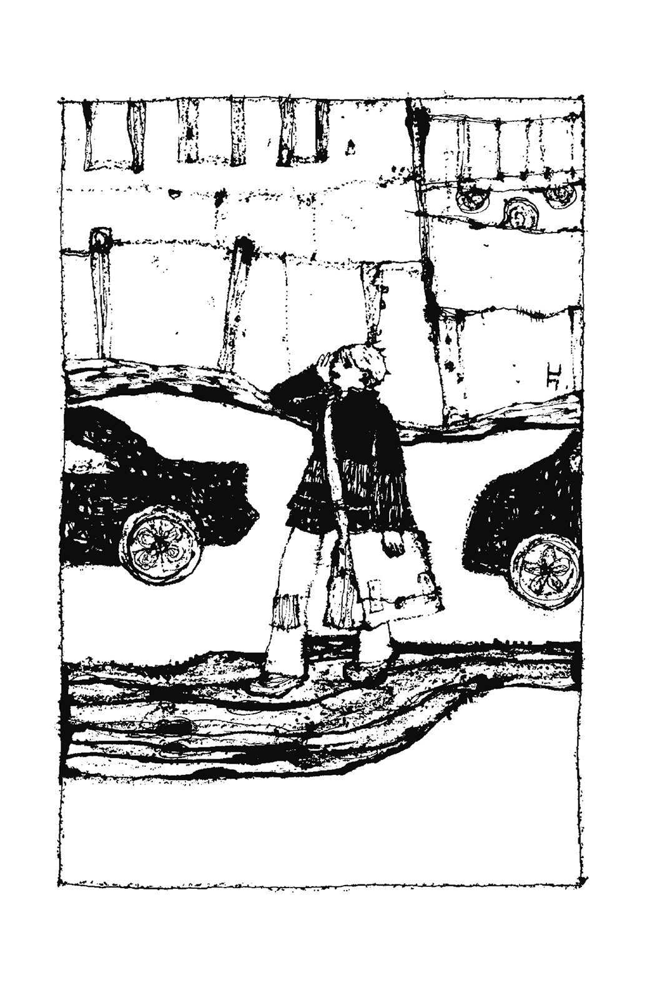
人びとはびっくりして聞いていたが、そのうち、だれかが気がついたように言った。
「あっ、そうか。きょうは四月一日、エイプリル・フールか。冗談を言って他人をかついでもいい日だった。これはうまくやられたな」
それにつれ、ほかの人たちもうなずきあい、おもしろそうに笑った。なかには、手をたたく者もあった。それに答えるかのように青年は頭をさげ、さらに声をはりあげた。
「喜んでいただけて、わたしもやってきたかいがありました。わたしたちの星は文明が高く、平和的です。みなさんのお役に立てるでしょう。これからは、お望みのものがあれば、わたしが連絡して、なんでもとりよせてさしあげます」
しかし、人びとはもう相手にしなかった。
「わかったよ。だが、ここではもう、だれも驚かないよ。その話をしたいのなら、べつな場所に行ってやりなさい」
と声をかけ、かまわずに歩きはじめようとした。だが、青年はあいかわらず、大声をあげつづけた。
「わたしが来たことによって、みなさんは、すばらしい生活ができるようになるのです......」
こうなると、人びとのなかには怒る者もでてきた。
「くどすぎるな。ちょっとした冗談なら楽しいが、こう度がすぎては人さわがせだ。通行のじゃまになる。警官にたのんで、連れていってもらおう」
しかし、べつな人はこう言った。
「いや、そう悪い人でもなさそうですよ。きっと、頭がおかしいのでしょう。気の毒な人です。病院へ連れてゆくべきでしょう」
この意見に賛成する人が多く、寄ってたかって青年を病院に引っぱっていった。青年は、
「なにをするのです。わたしは、みなさんのために来たのです」
と叫びながらあばれたが、ひとりでは、かなうわけがなかった。
その病院には、優秀で熱心な医者がいた。また設備もよく、あらゆる薬もそろっていた。だから、その青年をなおしてしまうのに、そう長くはかからなかった。
医者は青年に言った。
「さあ、手当ては終りました。あなたはまだ、自分がほかの星から来たような気がしますか」
「いいえ、そうは思いません」
「では、これで全快です。もう決して再発はしないでしょう」
「ありがとうございました。しかし、わたしはどこへ帰ったらいいのでしょう」
「自分の家を忘れてしまったのですか。あ、そうそう、あなたはカバンを持っていましたね。あれをあけてみたら、わかるでしょう」
青年のカバンがあけられた。なかに入っているものは、地球ではだれも見たことのないような機械だった。たいへん複雑で使い方はわからないが、どうやら連絡用の通信機のように思えた。医者はあわてて言った。
「さては、あの話は本当だったのか。たのむ、これを使って、あなたの星と連絡をとって下さい」
しかし、青年はきょとんとした顔だった。
「これは、なんです。どう使って、どこへ連絡しろとおっしゃるのですか」
もはや、もとには戻りそうになかった。
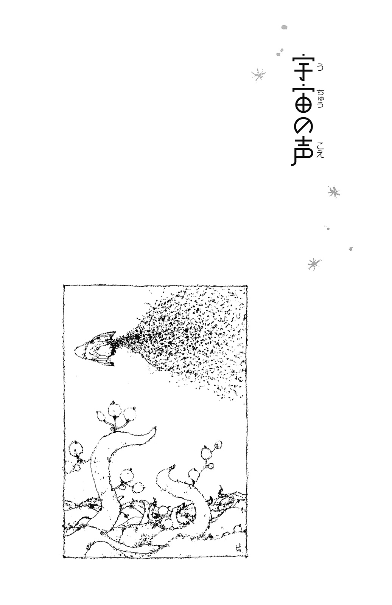
公園での事件
学校の帰りにハラ・ミノルとクニ・ハルコは公園に寄った。ふたりは同級でもあり、家もとなりどうしなので、特に仲よしだった。
どんなに科学が進んだ時代になっても、公園のながめは、むかしとあまり変らない。草花にチョウが飛び、噴水のそばでハトが遊んでいた。
ふたりは道を歩きながら話し合った。
「早く宇宙で活躍したいなあ」
「あたしもよ。星のあいだを飛びまわるの、すてきでしょうね」
いつも宇宙にあこがれる話になってしまう。ミノルのお父さんは宇宙船会社の技師で、ハルコのお父さんは天文学者。だから、ふつうの子供より、宇宙への関心が強かったのだ。
その時、公園の道をむこうから、ひとりの男が歩いてきた。がっしりしたからだで、目の鋭い男だ。ミノルは、どことなく変なところのある人だな、とは思ったが、そのまますれちがおうとした。そのとたん、ふたりは気を失ってしまった。
ミノルは目をさました。なぜ気を失ったのだろう。どれくらい、倒れていたのだろう。まず頭に浮かんだのは、この二つだった。しかし、ハルコも、そばに倒れているのを見て、考えるのをやめ、急いでゆり動かした。
「大丈夫かい」
「ええ......」
ハルコも目をあけた。おたがいにけがのなかったことを知り、ふたりはひとまず安心した。だが、あらためてあたりを見まわし、同じ言葉を叫んだ。
「ここはどこ......」
さっきの公園ではなかった。いままでに見たことも、空想したことさえない光景だった。暗い灰色の空がある。黄色い色をした、弱い光の大きな太陽が照っている。こんなことってあるだろうか。
地面は青っぽい色の砂だった。それは高く低く波のように、遠い地平線まで広がっている。空気がうすいせいか、息苦しかった。
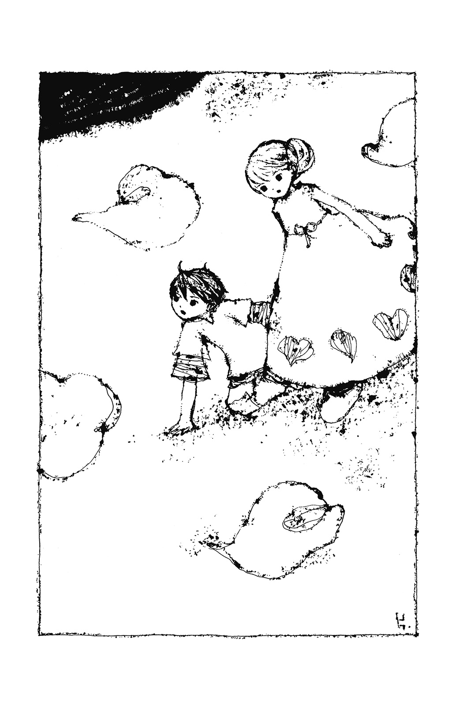
ミノルは目をこすりながら言った。
「いやな夢を見ているようだ」
「地球上ではないようね。あたしたち、宇宙人にさらわれて、連れてこられたのかしら」
「だけど、こんな場所にさらってきて、どうしようというのだろう」
砂漠には、建物ひとつ見えなかった。だれが、なんのために、ふたりを不意にここへ移したのだろう。その原因を考えようとしたが、まるでわからなかった。
「これから、どうしたらいいのかしら」
「まず、落ちついて方法を考えよう。あわててかけまわると、疲れるだけだ」
「むこうに見えるの、森じゃないかしら」
と、ハルコが指さして言った。十キロメートルほどむこうに、植物らしい緑色の森がある。
「ほんとだ。あれをめざして歩こう。植物が育っているのなら、水もあるはずだ」
「夜になって星が出たら、ここが地球から遠いのかどうかの見当がつくんだけど」
ハルコはお父さんから教わって、星座についてはくわしかった。
「たのむよ、そして、朝になったら森の木に登って遠くを見よう。少しでも役に立ちそうなものを、この星でさがそう。ふたりで力を合わせ、なんとかして地球へ帰るんだ」
「ええ、がんばるわ」
ふたりははげましあって、歩きだそうとした。しかし、すぐ足を止めた。変な物音を聞き、地ひびきのようなものを感じたからだ。なにげなく振りむき、ふたりは驚いた。
どこから出現したのか、大きな怪物が歩いてくる。古代の地球の恐竜のような形で、赤と黒のまざった、気持ちの悪い色をしていた。
ハルコは小さな声で言った。
「ねえ、早く逃げましょう」
「だめだ、逃げても、すぐ追いつかれる。そうだ、横になって砂でからだをかくそう。それしか、方法はない」
急いで身をふせ、手ですくって、青い砂をからだにかけ、怪物にみつからないようにした。しかし、ぶきみにほえる声も、地ひびきも、しだいに大きくなる。さらに近づいてきたらしい。
叫び声をあげて走りだしたいが、そんなことをしたら終りだ。身動きをしてはいけないのだ。ひや汗が流れ、心臓がはげしく動く。
地ひびきが止まった。いよいよ襲われるのだろうか。砂のなかでふるえているふたりに、どこからともなく声がひびいてきた。
「ハラ・ミノルくん。クニ・ハルコさん。もう大丈夫です。起きてください......」
これを聞いて、ミノルはハルコにそっとささやいた。
「声がしたようだけど、こわさで、ぼくの頭が変になったせいだろうか」
「あたしも聞いたわ。助けがきたのかしら。思いきって起きてみましょう」
おそるおそる首をあげたふたりは、またも信じられないような光景を見た。怪物も遠くの森もすべて消え、ここは明るいドーム状の部屋だった。そばには目の鋭い男が立っている。さっき公園で会った男だった。
「なにがどうなっているのか、ぼくにはさっぱりわからない」
ミノルが言うと男は笑いながら、
「きみたちを驚かして悪かった。しかし、試験のためにはしかたなかったのです」
「試験とはなんのことです。それより、ここはいったい、どこなのですか」
「ここは、公園の地下にある、宇宙研究所の一室だ。きみたちがいま見たのは、ドーム一面に、映写された映画だ。内部の空気の調節もでき、地ひびきも起こせる、特別じかけの映写室だったのだよ」
映画の怪物に驚かされたのだと知って、ハルコは文句を言った。
「なんで、こんなたちの悪いいたずらをしたの。ひどいわ」
「じつはいま、宇宙基地で、優秀な子供を求めているのだ。もちろん希望者はたくさんいるが、勇気があって落ちついた人でなければ役に立たない。これまで、この部屋でたくさんの子供たちを試験してきたが、みんな泣きだしたり、あわてふためいたりして、合格者はひとりも出なかった。きみたちふたりが、初の合格者だ。わたしは宇宙特別調査隊のキダ・マサオという者ですよ」
男は、身分証明書を出した。目が鋭いのは、宇宙で活躍しているためだったのか、と思いながらミノルは言った。
「合格すると、どうなるのですか」
「宇宙での仕事を手伝ってもらえるとありがたい。しかし、気が進まなければ、ことわってもいいし、それに、おうちの人の許しも必要だ」
ハルコは飛び上がって答えた。
「わあ、うれしい。あたしなんでもやるわ。うちでも賛成してくれるわよ」
ミノルも同じように答えた。ふたりの家は、いずれも宇宙の仕事には理解がある。ふたりは顔を見合わせ、目を輝かした。あこがれていた宇宙で活躍できるのだ。夢のような気持ちだったが、これは夢でもなければ、さっきの怪物のように映画でもないのだ。
基地のおばけ
ここはベータ星。地面は黄色っぽく、ほうぼうにある草むらは、ピンク色で、地球とはまるでちがうながめだ。
ところどころに直径五百メートルぐらいのドームがある。地球人がここに作った宇宙基地なのだ。透明なプラスチックでできていて、内部の空気や温度はほどよく保たれ、なかではなんの不自由もなく生活ができる。ドームの上には、大きなパラボラ・アンテナがそびえている。
ミノルとハルコがキダに連れられて、ここへやってきてから十日ばかりたった。
「やっと、あこがれの宇宙基地へ来ることができたね。ハルコさん、地球がなつかしくならないかい」
と、ミノルが話しかけた。
「それはなつかしいわ。でも、ここも楽しいわよ。なにもかも珍しいんですもの」
「うん、ぼくもだ。だけど、早く仕事がしたいな。キダさんにたのんでみようよ」
ふたりはキダの部屋に行き、言った。
「ねえ、ぼくたちの任務はなんなのですか。早く命令してください。なんでもします」
「まあ、そうあわてることはないよ。しばらく、基地のようすを見学していなさい」
というキダの言葉に、ふたりは従った。基地のドームとドームとは地下道でつながっている。宇宙船の修理工場もあれば、植物の研究所もある。地下水をたくわえるタンクもあれば、鉱物の精錬所もある。それらを見物して毎日をすごしたのだ。
そして、ある夜のことだ。ミノルはベッドの上で飛び上がって叫んだ。
「わあ、おばけだ......」
少し離れたベッドでは、ハルコも同じように叫んでいた。ふたりの声があまりに大きかったので、それを耳にしたキダがかけつけてきて、電燈を明るくして言った。
「どうしたんだ。大声をあげて......」
「おばけが出たんですよ」
「しかし、どこにもいないじゃないか。どんなおばけを見たっていうんだい」
ミノルとハルコはかわるがわる答えた。
「丸くて赤くて、ふわふわ浮いていました。ゆがんだり丸くなったり、やわらかい風船のような感じでしたよ」
「それに、白い水玉もようがついていたわ。目や口でもなさそうだし、なにかしら......」
「そういえば、変な声も出していたよ。意味はわからないけど、高い声だった。しかし、どこへ消えてしまったんだろう......」
ふたりは、あたりを見まわしながら、口ぐちに言った。キダは腕を組んでうなずいていたが、聞き終ると、まじめな顔で言った。
「そうか、やっぱり出たか」
ふたりは、驚いた。ミノルは聞いてみた。
「わかっていたことなんですか。それなら教えておいてくれればいいのに。すっかりあわててしまいましたよ」
キダはその説明を始めた。
「そう簡単な問題ではないのだ。じつは少し前にも、そんなことを言い出した者があった。しかし、ほかの者がかけつけるとなにもない。基地内をくまなく調べたが、なにも発見できない。また、この惑星の生物なら、もっと以前に出現していたはずだ。幽霊としか呼びようのない感じだ」
ふたりはちょっとこわくなった。
「そんなことが、あったんですか......」
「そうなんだ。疲れやすい老人が見たのならまだしも、いちばん若くて元気で優秀な隊員だった。そのご何回もさわぐので、頭がおかしくなったのかと思い、わたしが地球へ連れて帰った」
「それから、どうなりましたか」
「地球でくわしく診察したが、頭はおかしくないのだ。そこでわたしは、もしかしたら、若い者だけに感じるなにかがあるのかもしれないと思った。きみたちに来てもらったのも、その解決に手をかしてもらいたかったからだ。しかし、あらかじめ説明したら、熱心さのあまり、なにかを見まちがえることもあると思って、だまっていたんだ」
「そうだったのですか」
ミノルにつづいてハルコも言った。
「でも、あの正体はなんなのかしら。見当もつかないわ。それに調べようにも、どこから手をつけたらいいのか......」
「大変な仕事だな」
ふたりは困ってしまった。命じられた任務が、おばけの調査だったとは。おばけが相手では、さがしまわることもできない。現われるのを待つほかに方法はない。
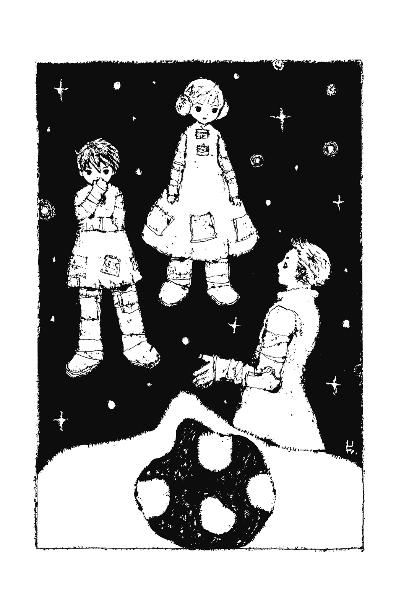
それからもときどき、ふたりは三回ほど夜中におばけを見た。白い水玉もようの、ぐにゃぐにゃした赤い玉が、変な声を出すのだ。そのたびに、ふたりはベッドから飛び上がる。
「また出たわ。あんまりこわい感じじゃないけど、正体がわからないのはいやね」
と、ハルコが言うと、ミノルもうなずいた。
「ああ、こっちに害は与えないようだ。しかし、変なおばけだな。電燈をつけると、あとかたもなく消えている。やはり、これは、夢のようなものじゃないかな」
「あたしもそう思うけど、夢にしては、はっきりしすぎているし、ふたりそろって同時に見るっていうのも変ね」
「その点だよ、そこがなぞなんだ」
ふたりが話し合っていると、キダがやってきて言った。
「どうだい、手がかりはつかめたかい」
「さっぱりです。いまは、現われた時刻の記録だけ。これだけでは......」
ミノルはメモを見せた。ハルコは自分の思いついたことを言った。
「あたし、星座に関係があるんじゃないかと思うんです」
「ハルコさんは、なんでも星座と結びつけてしまうんですよ」
と、ミノルは言ったが、キダは調べてみることにした。前に隊員が見た記録と、ミノルのメモとをコンピューターに入れたのだ。
ランプが明滅し、カチカチと音がし、コンピューターはやがて一枚のカードをはき出した。キダはそれを手に取ってながめていたが、驚きの声をあげた。
「これはふしぎだ。幽霊が出るのは、この基地のパラボラ・アンテナが、テリラ星の方角をむいている時と一致している......」
「その星から電波のようなものが出ていて、それが若い者の脳に作用し、あの変な夢を見させるのかもしれませんね。でも、それならもっと何度も見ていいはずだけど」
首をかしげるミノルにキダは言った。
「電波が出つづけているわけではないかもしれない。また、テリラ星の自転のためかもしれない。しかし、なんの信号だろう。風船のおばけでは、意味がわからない」
「どんな星なのですか......」
「少し遠いし、たいした星でもなさそうなので、調査に行った者は今までにいない。文明があるとも思えず、なんでこんな信号を送ってきたのか、ふしぎでならない」
「そのなぞをとく、いい方法がありますよ」
「ほう、どんなやりかただね」
「行ってみることですよ。ねえ、調べに行きましょうよ」
「うむ、しかし、それは基地の長官に相談してからだ」
三人はドーム越しに空を見上げた。星座のなかで、テリラ星がなぞをひめて光っていた。
プーボ
ミノルとハルコとキダは、基地の長官の部屋へ行き、これまでのことを報告した。長官はうなずきながら言った。
「なるほど、テリラ星からふしぎな電波が出ていて、それがここのアンテナにはいり、子供に変な夢を見させているというのだな」
「そうです、ぜひ調査に行かせてください」
キダがたのんだが、長官は首をふった。
「しかし、この基地では、ほかにも重大な仕事がたくさんある」
「そうかもしれませんが、これをほっぽっておいて、あとで手におえなくなったら大変です。早く調べたほうがいいと思います」
三人が熱心にたのむと、やがて長官は言った。
「よし、許可しよう。だが、その探検に基地の人員をまわすわけにはいかない。きみたち三人と、プーボとを行かせることにしよう」
そして、腕時計型の電話でプーボにここへ来るよう命じた。みながプーボとはどんな人かと待っていると、まもなくドアがあいた。はいってきたのはロボット、長官にあいさつをした。
「プーボです。お呼びでしょうか」
「ああ、この三人といっしょに、テリラ星への調査に出かけてくれ」
それを見てハルコが言った。
「あら、ロボットのことだったのね。でも、こんな新しい型のは、はじめて見るわ」
いままでのロボットのように、ゴツゴツした感じではなく、スマートだった。動きもすばやそうだ。長官は説明してくれた。
「そうだ、最新型なのだ。これまでは金属製ばかりだったが、これは特殊なプラスチックで作られている。プラボットと呼ぶ人もあるが、もっと簡単にしてプーボなのだ。さあ、プーボ、空中に浮いてみせろ」
「はい」
と、プーボは答え、胸を大きくふくらませたかと思うと床から浮き上がった。ミノルは目を丸くし、長官に質問した。
「どんなしかけなのですか」
「体内で軽いガスを発生させたのだ。からだが軽いのでそれができる。しかし、丈夫なことや力の強いことは、金属製のよりはるかにまさっている。そのほか、いろいろなことができる。どんなことができるかは、本人から聞いてくれ。いままでのロボットの十台分の働きをするだろう」
「それは大助かりです。さあ、プーボくん、出かけよう」
と、キダが言った。
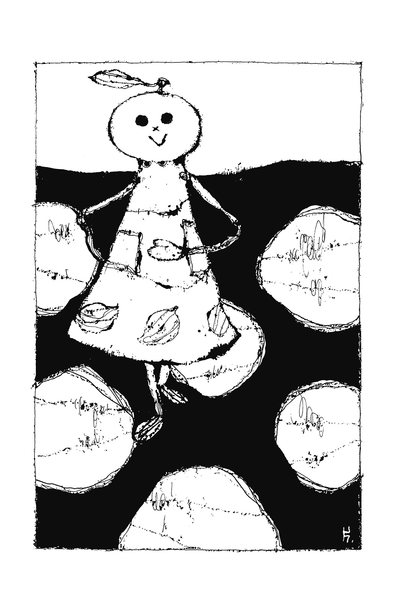
三人とプーボを乗せた宇宙船ベータ３号は基地を出発し、星々の輝く宇宙の旅をつづけた。ミノルとハルコは、すぐにプーボと仲よしになった。
「プーボくんのすぐれた力を見たいな。ねえ、なにかやってみてよ」
「なにをやりましょうか」
こう話し合っている時、警報のベルが鳴り、宇宙船内の電気がまたたき、光が弱くなった。操縦席でキダが大声をあげた。
「機械のようすが変だ。出発を急いで、点検が不充分だったためかもしれない。大変なことになった......」
修理をするには電源を切らねばならず、そうなると計器も止まってしまう。飛んでいる隕石をよけることができないため、事故が起きやすいのだ。
「それでしたら、わたしにおまかせください」
プーボは機械部分のふたをはずし、なかをのぞきこんでいたが、奥のほうに手を入れて、電線のよじれを簡単になおしてしまった。そして、とくいそうに言った。
「金属製でないため、高圧の電気や強い磁石にさわっても平気なのです。また、指先もしなやかなのです」
「なるほど、そうだね」
みなはほっとし、すっかり感心してしまった。
それから、プーボはミノルとハルコに、宇宙服のとりあつかい方法とか、非常食の食べ方などを教えてくれた。ミノルはふしぎそうに聞いた。
「そんなこと、プーボに不必要な知識だと思うけど、どうして知ってるんだい......」
「あなたがたに教えるためですよ。わたしは学校の先生もできるのです。さあ、よく勉強してください。ここでは、ずる休みはできませんよ」
「わあ、変なことになっちゃったわ......」
ハルコは笑い声をあげた。しかし、ふたりは時間表を作って、プーボにいろいろと教わることにした。ほかにすることもない宇宙船のなかだ。ぼんやりしていてもつまらない。
宇宙の旅がつづいた。ミノルとハルコはときどき、あの水玉もようのついた赤い玉の夢を見た。それは、しだいにはっきりし、基地で見た時のように、ゆがんでいなかった。テリラ星に近づいたため、途中の電波の乱れがなくなったのだろう。
こうして、宇宙船はテリラ星のそばまできた。
キダはみなに言った。
「まず、どこかに着陸し、地上のようすを調べることにしよう」
ベータ３号は注意をしながら高度を下げた。あたたかい星らしく、植物がよく育ち、森が多かった。そのため、着陸の場所をさがすのにひまがかかった。だが、やっと小さな平地をみつけ、そこへ着陸することができた。
「さあ、早く出てみましょうよ」
と、ミノルとハルコが叫んだ。人類がはじめて訪れた星だと思うと、興奮してしまうのだ。
窓から外をながめていると、森のなかから、なにかが立ちのぼった。よく見ると、それはたくさんの鳥だった。黒くて大きくて強そうな鳥だ。それを指さしてプーボが言った。
「外へ出るのはお待ちなさい。あの鳥たちが人間をどう迎えるか、まず、わたしが出て、ためしてみましょう」
そして、宇宙服を着て外へ出た。すると空を飛びまわっていた鳥たちが、いっせいにプーボめがけて襲いかかってきた。
一羽や二羽ははらいのけたが、こうたくさんでは、どうにもならない。
プーボは光線銃で十羽ほどうち落としたが、鳥の数は多かった。急降下し、鋭いくちばしで突きたてる。それがくりかえされると宇宙服に穴があき、ぼろぼろになってしまった。プーボは宇宙船に戻って報告した。
「わたしだから、よかったようなものですよ。気ちがいみたいに、むちゃくちゃな鳥が支配している星ですね」
その宇宙服を見て、みなはぞっとした。特殊プラスチック製のプーボだから助かったが、人間だったらやられてしまったところだ。
キダは顔をしかめて、腕を組んだ。
「こんな星に文明があるとは考えられない。なぞの電波を出しているのはどんな相手で、なんのためなのだろう。しかし、こんなありさまでは、調べるのにひと苦労だな」
その時、ハルコが悲鳴をあげた。
「あら、こっちにもむかってくるわ......」
鳥たちは窓のなかに動くものがいるのをみつけたのだ。宇宙船の窓をめがけて、急降下をはじめようとしていた。
夜の森
鳥はものすごい勢いで、宇宙船の窓ガラスにぶつかってきた。激しい音がひびいたが、丈夫なガラスは、割れなかった。
しかし、たえまなく突っつかれていると、そのうち、ひびが入るかもしれない。
「いい気持ちではないな。いちおう飛び立つとするか」
と、操縦席に入りかけるキダに、ハルコが言った。
「そうしたら調査ができないわ。もう少し、ようすを見ましょうよ」
そして、窓のカーテンを引いた。なかの人影が見えなくなったためか、もう鳥たちはぶつかってこなかった。カーテンのすきまからそっとのぞくと、鳥はそのへんを飛びまわり、木になっているヤシの実のようなものを突っつき、なかみを食べていた。くちばしはとても鋭いようだ。
みなは鳥の観察をしたり、着陸前にとった写真をもとに地図を作ったりした。やがて夕方になり、鳥たちは森に帰っていった。
「この星では、夜のほうが安全なようですよ。プーボに見まわってきてもらいましょう」
と、ミノルに言われたプーボは、外へ出て、近くをひとまわりして帰ってきた。そして報告した。
「鳥は眠っているし、ぶっそうな動物はいません。出ても大丈夫です」
キダとミノルとハルコは、それぞれ宇宙服をつけ、光線銃と小型ランプとを持って外へ出た。
空には小さい月が輝いていたが、森に入ると、その光もとどかない。みなはプーボを先頭に、一列になって奥へ進んでいった。とても静かだった。地面にはコケがはえていて、足音も立たないのだ。
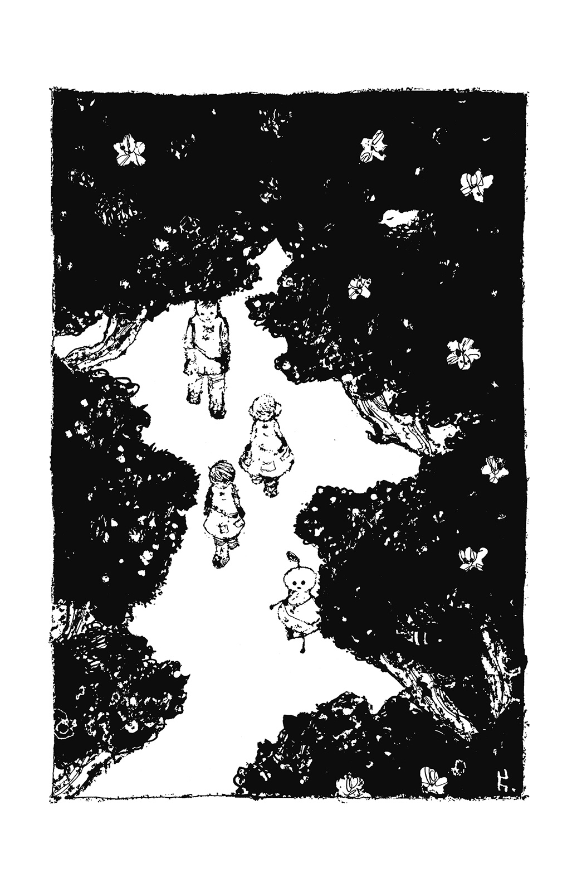
木にはツタがからまり、白い花が咲いていた。ハルコはつみとりたかったが、それはやめた。はじめての星では、なにをするにも注意しなければならないのだ。ときどきランプの光にむかって、大きな虫が飛んでくるが、宇宙服を着ていれば心配ない。
みなは、だまって歩きつづけた。
その時、突然「ギャア」という鳴き声がし、ミノルの肩に、なにかが当った。
ランプの光で、ねぼけた鳥が木から落ちてきたのだ。おそろしい鳥に襲いかかられたのかと思い、ミノルは飛び上がって驚いた。
そして、思いきりかけだした。ほかの者が呼び止めるひまもなかった。宇宙船に逃げ帰るつもりだったが、森のなかではよくわからない。とうとう、まいごになってしまった。
ミノルが疲れてすわりこむと、宇宙服についている通信機からキダの声が聞こえてきた。
「ミノルくん、どこにいるんだ......」
ミノルのまわりは限りなくつづく森だけだ。ミノルは心細い声で答えた。
「わかりません。それより、さっきの鳥はどうなりましたか」
「地面に落ちたまま眠っている。あわてることはなかったのだ。ミノルくんは、宇宙船の電波をたよりに戻ってくれ」
みなの腕時計には、特別な針がついている。針はつねに宇宙船の方角をさしていて、それについて進めば帰れるのだ。だが、ミノルは悲しそうに答えた。
「かけだした時、木にぶつけて、それがこわれてしまいました。ぼく、このまま、まいごになってしまうんでしょうか」
するとプーボが言った。
「わたしにはさがせます。いまの場所を動かず、歌を歌って待っていてください。その通信機からの電波をたよりにさがします」
キダとハルコは、プーボのあとについて歩きはじめた。途中、ハルコが小さな川に落ち、プーボに助けてもらったりした。
そのうち、木の根に腰をおろしてしょんぼりしているミノルを、やっとみつけることができた。
「よかったわね。一時はどうなることかと、とても心配だったわ」
と、ハルコはほっとして言った。
キダは時計を見て、あわてて言った。
「思わぬことで、時間がかかってしまった。まもなく夜が明けはじめる。それまでに宇宙船に帰れるかどうか......」
みなは大急ぎで歩いた。地球だと明るい朝になれば、こわい夢は消えてくれる。しかし、ここでは、朝になると、あの、おそるべき鳥たちがあばれはじめるのだ。
空が少し明るくなりかけてきた。プーボはこう言った。
「まにあわないかもしれません。近くに、かくれる場所があるかどうか、さがしてきます」
そして、からだをふくらませ、森の上に浮き上がってあたりを見まわし、戻ってきて報告した。「少し先に丘があり、そこにほら穴があります。そのなかにかくれましょう。さあ、急いでください」
みなはプーボの教えた方角に急いだ。しかし、空はさらに明るくなり、木の上で、はばたきをはじめた鳥もある。みつけられたらおしまいなのだ。ハルコは息をきらせて言った。
「まだなの」
「あと二百メートルぐらいです。ここからも見えるでしょう」
プーボは指さした。まばらになった森の木のむこうに岩の多い丘が見え、そこにほら穴があった。それにむかって足を早めたが、鳥たちは、つぎつぎに目をさました。
穴まであと百メートルぐらいになった時、ついに一羽の鳥が飛びかかってきた。キダは光線銃でうった。みごとに命中したが、その鳥の叫びで、ほかの鳥たちが気づき、つぎつぎに襲いかかってくる。どうしたらいいのだろう。
その時、プーボが言った。
「みなさん、ここはわたしにまかせて、穴までまっしぐらにかけていってください」
どうするつもりなのか、聞くひまはなかった。ミノルと、ハルコをせおったキダは、穴をめざしてかけだした。鳥たちは襲いかかってくる。
プーボは、自分の指を一本はずし、地面にむかって投げた。それは破裂し、黒い煙を出した。煙幕だった。あたりは夕方の暗さになり、鳥はまごついている。そのあいだに、やっと穴にたどりつけた。なかはうす暗く、鳥もそこまでは追ってこない。みなはほっとし、一時に出た疲れのため、眠くなってきた。プーボは言った。
「わたしが見張っています。ゆっくり眠ってください。どうせ夜までは出られません」
みなは倒れるように横になった。何時間か眠り、起き上がったハルコが言った。
「あたし、また、あの赤い玉の夢を見たわ。すごくはっきりしていたわ」
「うん、ぼくも見たよ」
と、ミノルもうなずいた。キダは、ほら穴の奥を指さして言った。
「とすると、このほら穴の奥に、なぞがひそんでいるのかもしれないな」
ほら穴での事件
ほら穴の奥を調べようときまった。プーボが先に立ち、みなはあとにつづいた。まっ暗で、上からぽつぽつと水がたれていた。なにが現われるかと、ランプの光で照らしながら、ゆっくりと進んだ。
穴はけっこう深かった。しばらくすると、道は二つに分かれていた。みなはひと休みした。
「どっちへ進むの......」
と、ミノルが言った。キダはプーボに言った。
「なにか、もの音は聞こえないか」
「いいえ、静かです。どっちへ行ったらいいのか、わたしにもわかりません」
ハルコは穴の奥に呼びかけた。
「ねえ、だれかいたら出てきてよ......」
しかし、声の反響だけで、答えはなかった。
「しかたがない。まず、右のほうへ進もう」
と、キダが歩きかけると、プーボが言った。
「待ってください。左のほうの奥から、なにか音がしはじめました。なぞがあるとしたら、こっちでしょう」
プーボについて進むと、奥からの変な音は、みなの耳にも聞こえてきた。うなり声のようだった。そして、想像もしなかったものが、姿を現わした。
みなは思わず足を止めた。青白く光っており、高さは二メートルぐらい。目も鼻も口もないのっぺらぼうだった。手もなく、足のほうはぼやけていた。ときどき、うなり声をあげる。気持ちの悪い叫びだ。それは、少しずつ近よってくる。
「だれだ。なにものだ......」
と、キダが呼びかけたが、もちろん答えない。キダは光線銃をかまえたが、うつのは止めた。危険な敵なのかどうか、まだわからないのだ。
「眠りガス弾を投げてみます。たいていの動物なら、しばらく動けなくなります」
と、プーボが言い、キダがうなずくと、また指を一本はずして投げた。みなは宇宙服を着ているので大丈夫だ。白い煙がたちこめたが、のっぺらぼうの怪物はひるまなかった。煙のなかを近よってくる。プーボは勢いよく飛びかかった。どんな相手でも、やっつけてしまうはずだった。しかし、そのままはねかえされてしまったのだ。プーボは、
「弾力がある手ごわい相手です。また、表面はつるつるで、つかまえようがなく、わたしの力は使えません」
怪物は進み、こっちはしりぞいた。キダは決心し、光線銃の引き金をひいた。目もくらむような光が発射され、命中すると高熱でとかしてしまうのだ。
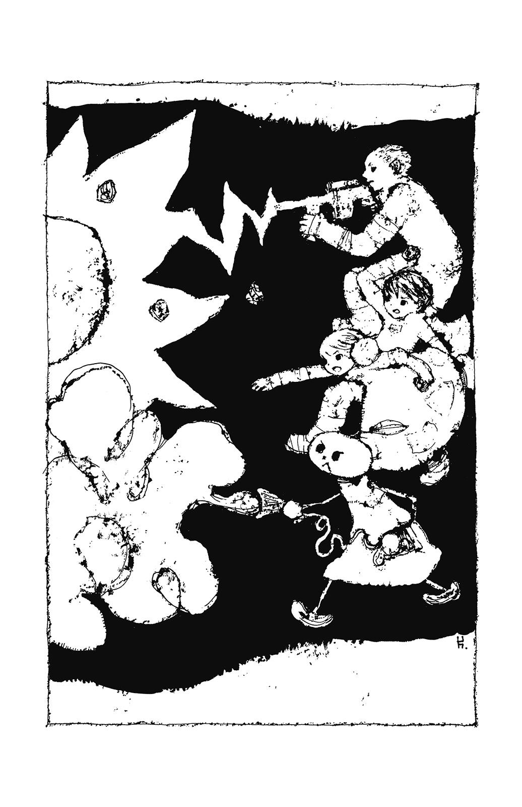
だが、怪物は平気で進んでくる。ガスも高熱もだめなのだ。みなは退却し、穴の出口のそばまできてしまった。しかし、外には逃げられない。おそろしい鳥たちが待ちかまえているのだ。
夢に現われた赤い玉のなぞを追って、ここまできて、こんな目に会うとは、だれも考えてもみなかった。あの夢は、おびきよせて殺すためのワナだったのだろうか。
「どうしましょう......」
と、ハルコが言うと、キダは、みなをはげました。
「がんばれ、なんでもいいから戦うのだ」
キダは、拳銃を出してうった。プーボは煙幕を使った。ミノルとハルコは石を拾って、どんどん投げつけた。穴の外へおし出されたら終りなのだ。
どれくらいの時間がたったろうか。煙が散ったあとに、怪物は立ち止まっていた。もう進んでもこず、声もたてなかった。
ほっとして見つめていると、怪物は皮をぬいだ。かぶっていた外側をはずしたのだ。あまりのことに驚いていると、なかから、また思いがけぬものが現われた。
四本の細長い足があり、その上に直径五十センチぐらいの丸い玉がのっている。そして、それは水玉もようのある赤い玉だった。ミノルとハルコが何度も夢で見たのと同じだった。
プーボが近よって調べ、報告した。
「なにかの装置のようです。足は非常に弾力のある金属製です。かぶっていたものは、成分はわかりませんが、とてもなめらかです。すそのほうが黒いので、おばけとまちがえてしまいました。こうと知ったら、別なやり方でやっつければよかった」
物体は、おとなしくなっていた。それどころか、穴の奥へと戻りはじめたのだ。その動きには、あとへついてきなさい、という感じがあった。
みなはあとにつづいた。ここまできて、おじけづいてはいられない。赤い玉は四本の細い足で進み、やがて止まった。
そこには、四角の細長い箱が置いてあった。なにが入っているのだろう。ガラスのはまった小さな窓があり、キダはなにげなくのぞいて「あっ」と声をあげた。ミノルとハルコものぞいてみた。
なかには人が横たわっており、身動きもしない。地球人に似ているが、そうではなかった。皮膚の色がみどりがかっており、かみの毛はピンクだった。
「死んでいるのでしょうか......」
「わからない」
話し合っているのにおかまいなく、赤い玉は足の一本を使い、箱の横についている、いくつものボタンを押した。
しばらくすると、なかの人は目を開き、動きはじめ、内側から箱をあけて出てきた。銀色のマントを着ていた。そして、なにか言った。だが、みなは驚きで声も出なかった。
相手はうなずいて、箱の中からメダルぐらいの大きさのものを出し、自分のひたいにはりつけた。
とたんに、みなにひとつの声が伝わってきた。
「わたしはオロ星人で、デギという名です。ある任務をおびて宇宙を旅行中、ここに不時着しました。やむをえず、冬眠状態になり、救援を待つことにしたのです。なによりもまず、この赤い玉がなにかをお知りになりたいようですね。これはわたしの番をし、救助信号の電波を出しつづける装置なのです。また、文明を持った生物がやってきたら、わたしを冬眠からめざめさせてくれるのです......」
ミノルとハルコは顔を見合わせた。あの夢は、この装置の出す電波のせいで、助けを求める意味の信号だったのか。それがやっとわかったのだ。しかし、われわれが文明の持ち主だと、どうしてわかったのだろう。それに答えるように、相手が言った。
「文明の持ち主は、いろいろな攻撃方法を持っています。つづけて四種類以上の攻撃をこの玉に加えると、戻ってきてわたしを起こすのです......」
変な装置だな、とミノルは思った。眠りガス弾、光線銃、拳銃、それに石で、四種類になる。しかし、やはり最後までがんばってみてよかったようだ。石を投げたのがきいたことになるんだもの。
オロ星人のデギは、身をのり出して言った。
「玉のことはこれくらいにして、わたしのことをお話しましょう」
オロ星の悲劇
キダは腕時計をのぞいて、オロ星人のデギに言った。
「こんな穴のなかでは、落ちついて話もできません。わたしたちの宇宙船においでください。外は夜で、あのぶっそうな鳥も眠った時間です」
「そうですね」
と、デギは冬眠箱の番を赤い玉にまかせ、みなといっしょに宇宙船に来た。そして、プーボの作った食事を食べ、あたりを見まわしながら言った。
「なかなかりっぱな宇宙船ですね。どこの星からいらっしゃったのですか......」
キダはあらましを説明した。自分たちは地球という星のもので、科学を高めて宇宙へ進出し、近くの星々に基地を作るまでに発展したことなどを話してから、
「......それよりも、オロ星の話を早く知りたいものです。さぞ文明が進んでいることでしょう。その、ひたいにつけるだけで、言葉が通じるようになる装置など、すばらしいではありませんか」
「あるいは、少しは進んでいる点があるかもしれません。しかし、いまや文明どころではない、大変なことになりかけているのです。思いがけない不幸に襲われたのです」
「いったい、なにが起こったのですか」
と、ミノルとハルコは身をのり出した。
デギの話によると、こうであった。
オロ星も地球と似たような歴史をたどってきた。星の上でおたがいどうし争った時代もあったが、それを止め、力を合わせて宇宙へと進出しはじめたのだ。
オロ星人たちは、近くの星々に基地を作り、役に立つ鉱物など、多くのものを発見した。すべては順調に進んでいた。
また、珍しい植物もいくつか採集してきた。オロ星の学者のなかに、ちがった星々から集めた植物をかけあわせ、新しい品種を作る研究にとりかかった人があった。
学問的に面白い研究であり、それはついに成功した。しかし、とんでもない植物ができてしまったのだ。役に立たない雑草といった簡単なものではない。あらゆる植物の悪い点ばかりを、すべてそなえた植物なのだ。
見たところは大きなツタのようで、どんどん育ってのびていく。途中で、ちょん切っても、切られた部分が根をおろし、そのまま育つのだ。
大きな葉はネバネバした液を出していて、近よる動物をくっつけ、食べてしまう。花は変なにおいを出し、それを吸うと頭がぼんやりしてしまう。
茎にはとげがあり、それで刺されると、毒のために死んでしまう。つるに巻きつかれてしめつけられると、丈夫なビルでさえこわされてしまう。なにしろ、大変な植物だった。
研究所は、たちまち破壊されてしまった。植物は育ちつづけ、広がり、近くの農作物も家畜もやられていった。人びとは、町を捨てて逃げなければならなかった。このままだと、オロ星はこの植物に占領され、あらゆる生物がほろんでしまうことになる。
もちろん、オロ星の人たちも、ぼんやりしてはいなかった。いろいろな方法で、この植物をやっつけようとした。しかし、高熱の火で焼きはらっても、地下に根が残っていて、ふたたびはえてくる。
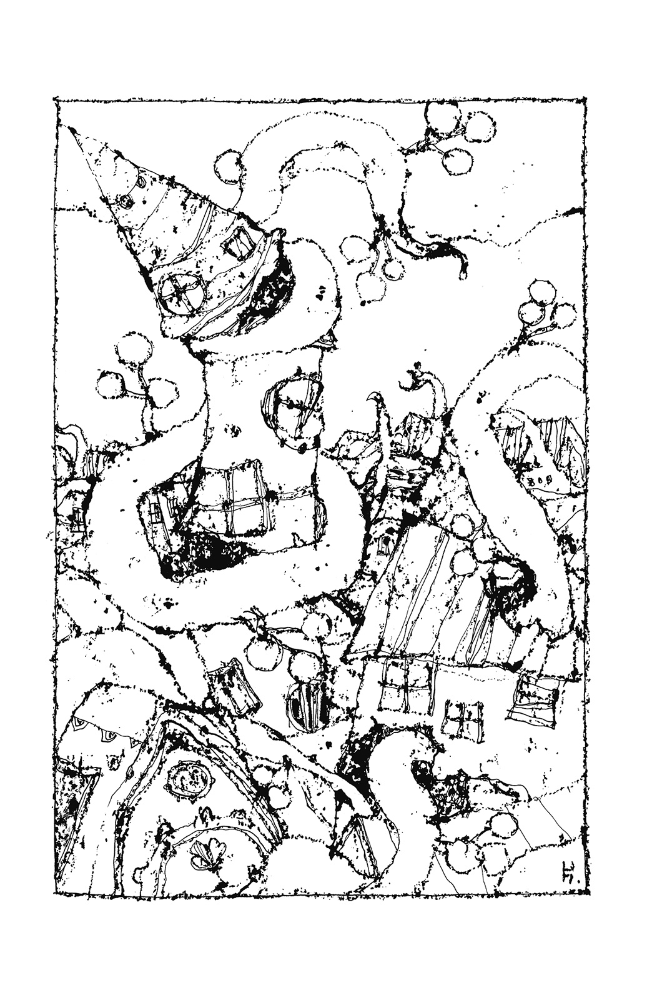
そのうち、想像していた以上におそろしい相手であることがわかってきた。その植物には知能があるらしいのだ。
はじめのうちは火で焼きはらうことができたが、やがて、それがきかなくなった。おそらく、根で地中から金属成分をからだにとりいれ、高熱にたえられるような、茎や葉になってしまったのだろう。
強い電波をあてると、植物は弱まり、枯れていった。しかし、まもなくそれもきかなくなり、植物は勢いをとり戻して、生長しつづけるのだ。
手のつけようがなく、とても防ぎきれない。ききめのある武器を作っても、植物はすぐそれにたえる性質に変化してしまうからだ。悪い心と、ずるい頭と、すごい力とを持った強敵なのだ。
しばらくすると、もっとひどいことになった。植物は、熱にも薬品にもおかされない種子を作り、タンポポのようなフワフワしたものをくっつけ、風にのせて飛ばしはじめたのだ。これでふえようというのだ。
オロ星の人びとは必死に戦ったが、勝ちめはなく、徐々に滅亡にむかっている。
オロ星人たちは相談し、大急ぎで海底に都市を作り、そこに逃げこんだ。しかし、その内部で、みなが生活できるような、大きな海底都市が、そうすぐに完成するわけがない。なかで冬眠状態になるのがやっとだった。
そして、一部の学者たちは、オロ星の月の基地へ移住した。そこで植物を退治する方法を研究しようというのだった。
海底都市には、警戒のため、冬眠していない係員が残っており、月の基地とは、無電で、連絡しあっている。
〈こちらは海底都市。植物を退治する研究の進みぐあいはどうですか〉
一日に一回は、このような通信が月へと送られてくる。しかし、月からの返事は悲しい文句なのだ。
〈まだ成功していない。みないっしょうけんめいに、やってはいるのだが......〉
〈早くお願いします。このままだと、オロ星人のすべては、永久に冬眠しつづけなければなりません〉
海底都市からはせかされるが、月での研究ははかどらず、植物はオロ星の地上をおおう一方だった。
そこで、月の基地の学者たちの何人かは、宇宙船に乗って、思い思いの方角にむけて、宇宙へと出発していった。文明の進んだ星の住民をさがし、その助けをかりようというのだ。
デギはこれらのことを、小型の映写機でうつして見せながら説明した。そして言った。
「というわけです。わたしはそのひとりで、宇宙を飛びつづけました。しかし、宇宙船が事故を起こし、この星に不時着してしまったのです」
キダはうなずいて言った。
「そうでしたか。それは大変なことですね。お気の毒なことが、よくわかりました」
「しかし、ほっとしました。地球人のみなさんと、こうして知りあいになれたのですから、ぜひ、わたしたちオロ星のために力をかしてください」
デギはうれしそうだった。しかし、ミノルもハルコも顔を見合わせた。とてもおそろしい植物のようだ。キダは言った。
「お役に立つことがあれば、もちろんお手伝いします。しかし、わたしたち地球人に、どんなことができるか、ちょっと自信がありません」
おそるべき植物
キダはベータ星の基地と無電で連絡し、いままでのことを報告した。なぞの電波はオロ星人のデギの救助信号であったこと、そのオロ星では、大変な事件が起こっていることを話してから、
「どうしましょう、なんとかしてあげたいものですが......」
と、聞いた。基地の長官は命令した。
「気の毒なことだが、どうしていいのか見当もつかない。そのオロ星へ行って、くわしく調べてみてくれ」
「はい、そうします」
みなは夜になるのを待ち、不時着したデギの宇宙船を見にいった。近くの谷間にあった。故障していて飛べないが、小型で、なかなかよくできていた。ミノルとハルコは、なかに入り、デギにいろいろと質問した。
「これはなんなの......」
「頭で考えたことが、すぐ文字となって記録される装置です」
「では、これは......」
「髪の毛をかってくれる装置です。こっちのは、水を使わずに、からだをきれいにする空気シャワーです」
「すごいな......」
と、みなが感心するなかで、プーボはつまらなそうに言った。
「便利な装置がたくさんできると、わたしなど、いらなくなってしまいますね」
それをデギがなぐさめた。
「そんなことはありません。このなかの必要なものを、あなた方の宇宙船に運ばなければならないのですよ」
「わたしにおまかせください」
プーボの働きで、その仕事はすぐにすんだ。プーボはそのほか、標本用にと、この星の鳥の卵を六つほど集めてきて積みこんだ。そして、宇宙船は出発した。
オロ星をめざす宇宙船のなかで、ミノルもハルコも、デギにいろいろなことを聞いた。デギは答えてくれたが、心配そうな顔つきをつづけていた。自分たちの星の運命が気になってならないのだろう。
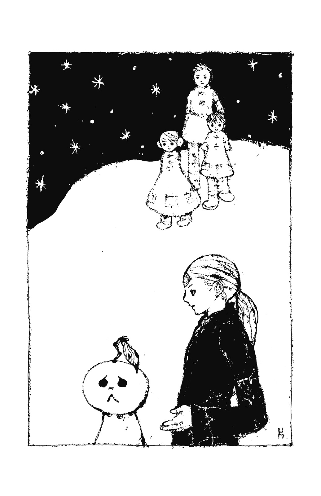
そのうち、デギは操縦席のキダに言った。
「針路を少し右にとってください」
「なぜですか。それだと、遠まわりになってしまうでしょう」
「行きに遠くから観察しただけですが、よさそうな星があったのです。それをたしかめておきたいのです」
「そうですか。いいですとも」
宇宙船はその星をめざし、やがて近づいた。キダは上空からながめて言った。
「変な星ですね。海もあり、川も流れている。スペクトルで調べると酸素もある。それなのに、草一つなく、生物はまったくいないようです。荒れはてて、さびしい景色です。なんで、こんな星に興味があるのですか......」
「もし、わたしたちがあのおそるべき植物に勝てなければ、どこかに移住しなければなりません。その場合を考えたのです。移住は大事業ですが、生きのびるためには、いざとなればしかたありません」
星の住民の全部が引っ越しをするのだ。そして、ここに第二のオロ星を作りあげる。さぞ、大変だろうな、とキダは思いながら言った。
「着陸してよく調べましょうか」
「いや、それより早く行きましょう。水と酸素のある星とわかればいいのです」
と、デギは答えた。
宇宙船はオロ星へと針路を変えた。
宇宙船は飛びつづけ、オロ星の月へと着陸した。空気はなく、岩ばかりだ。ドーム状の建物がいくつも並び、なかではオロ星の人々が、いそがしそうに働いている。
ドームから迎えに出てきた人にデギが言った。
「植物を退治する方法が見つかったか......」
「それが、まだなのだ。植物はふえつづけている。しかし、デギが協力者を連れて帰ってきてくれたので、ほっとしたよ」
デギは地球人と会ったいきさつを話し、みなを紹介した。キダはあいさつした。
「できるだけの協力はしますが、あまり期待されても困ります」
みなは、ドームのなかに入った。月の基地の人たちは、喜んで迎えてくれた。しかし、歓迎会などしているひまはない。だれも植物との戦いが第一なのだ。
基地には、オロ星にむけられた大きな望遠鏡がある。みなはそれをのぞいてみた。地上には、デギの話のとおりの、おそるべき光景があった。
むらさき色の葉をした植物が、各地にひろがっている。町にはだれも住んでいない。とがった塔や、丸い屋根や、美しい道路を持った町も、植物に侵入されてしまったのだ。
くだものの林は枯れ、畑にはなにも育っていない。かつて牧場だったらしい場所には、植物にやられた動物の骨が散らばっている。
川にかけられた橋にも、植物がからみついていた。それだけでなく、たくさんのつるが引っぱっているらしく、丈夫そうな橋がゆれていた。つるは鋼鉄のように強いらしい。
見つめていると、ついに橋はこわれ、水の中に沈んでいった。ミノルはデギに言った。
「あの植物は、なぜ橋をこわしたりするのでしょう？」
「どうやら、オロ星を自分だけのものにしたいらしいのです。つまり、自分以外のものは、すべて敵というわけなのでしょう。だから、おそろしいのです」
そばにいた基地の人が、説明を加えた。
「じつは、少し前に総攻撃をやってみたのです。ナイフ弾ともいうべきものを作り、たくさん発射しました。刃のついたままで、植物をずたずたにしようとしたのです」
「戦果はどうでしたか......」
「植物は弱りかけたが、すぐに勢いをとり戻しました。それどころか、ナイフと同じ成分、つまり鉄の製品に対して、あのように怒ってあばれるようになりました」
望遠鏡で別な場所をながめると、そこでは高いアンテナが引き倒されていた。この調子だと、コンクリート製の弾丸で攻撃すると、ビルをこわしはじめるかもしれない。
デギはなかまに聞いた。
「ほかの星々へむかった連中から、いいしらせはないのですか」
「あまり、たいしたことはありません。文明の低い星では、おたがいどうし戦っていて、協力してくれません。文明の高い星の住民には、芸術が好きで気が弱いのが多いようです」
「つまり、だめなのですか」
「いえ、スロンという星にむかった者は、そこで冷凍砲をかりるのに成功したようです。まもなくとどくはずです」
ミノルとハルコは言った。
「それで退治できればいいですね」
オロ星の海の底では、住民たちが眠っているのだ。早く地上に出してあげたい。
一つの作戦
オロ星の月の基地では、地上にはびこりつづける、おそろしい植物をながめ、だれもが困りきっていた。キダやミノルたちも、どう手伝ったものか、いい考えが浮かばない。ただ、気の毒がったり、はげましたりするだけだった。
しかし、そのうち、スロン星へ行った宇宙船が戻ってきた。冷凍砲をかりてきたのだ。基地のなかは、急に元気づいた。帰ってきた人びとは報告した。
「スロン星ではとても同情され、たくさんの冷凍砲をかしてもらった。これは冷凍光線を出し、それが当ると、すべてのものは凍りついてしまう。ここで実験してみよう」
長さ二メートル、直径二十センチほどの筒状のものだった。それを見てハルコは、天体望遠鏡のようね、と思った。
こみいったしかけなのだろうが、使い方はやさしかった。引き金を引くと青白い光がほとばしり、命中すると、なんでも凍りついた。ながめていたひとりが言った。
「すごいものだな。これで植物を凍らせれば、生長が止まるにちがいない。しかし、いつまでも凍ったままではいないだろう。やがてはとけ、またあばれだすのではないかな」
「いや、そのための準備はあるのだ。このプラスチックの液ももらってきた。凍らせてから、これをかけるのだ」
そのプラスチックは熱をまったく伝えない性質を持っており、これをすぐ吹きつけてつつんでしまえば、ずっと凍ったままになるというのだった。
「なるほど、それならうまくいくかもしれない。さっそく攻撃にかかろう」
ようすがわかり、キダは申し出た。
「わたしたちの宇宙船にも、それを一台積んでください。攻撃に協力します」
「それはありがたい。お願いします」
それから、オロ星の地図をかこんで、作戦がねられた。キダの宇宙船には、デギがいっしょに乗ることになった。
オロ星人の宇宙船は、何台も月の基地を飛び立ち、地上へとむかった。冷凍砲での攻撃が、開始された。
キダは、宇宙船を操縦し、地面近くをゆっくり飛ばせた。いやな、むらさき色をした大きな葉の植物が、敵意をひめて、ゆっくりと動いている。つるに巻きつかれたら、たちまち、こわされてしまうのだ。
宇宙船から、デギが冷凍砲をうった。植物はたちまち動かなくなる。つぎに、プーボがプラスチック液を吹きつける。ミノルとハルコも熱心に手伝った。
作業は順調に進んだ。地上の植物は、みるみるうちに造花のようになってしまった。
「おりてみましょうよ」
と、ハルコが言い、キダは宇宙船を着陸させた。あたりは、奇妙な光景だった。だれもいないビルやこわれた橋に、動きを止めた植物が巻きついている。それらの表面は、吹きつけられたプラスチックのため、キラキラした感じになっていた。
静かななかで、ときどき、ポキポキいうするどい音がひびいた。凍ったために弾力がなくなり、植物のつるが折れる音だった。
その時、ミノルが悲鳴をあげた。
「助けて......」
みながあわててふりむくと、建物のなかから植物がのびて、ネバネバした葉でミノルをつかまえた。建物のなかまで、冷凍光線がとどかなかったのだ。
デギは急いで冷凍砲をむけた。だがへたに発射すると、ミノルも、凍ってしまう。注意してねらい、植物を凍らせて動かなくした。
しかし、葉にくっついたミノルは、なかなかはなれない。ついに服をぬいで、やっと逃げだすことができた。それから、みなは建物のなかをよくさがし、植物を凍らせる作業をつづけた。
オロ星人たちも、それぞれ作業をすませ、月の基地へと戻ってきた。
「なんとか一段落したようだな。植物があばれなくなった」
「これで、ひと息つける。つぎは、あれをどうするかだ。利用価値のない氷の星へでも運び、捨てることにでもするか」
しかし、何日かすると、そう簡単にはいかないことがわかってきた。望遠鏡でながめると、地上では植物が息をふきかえし、また動きはじめたらしい。たしかめに行った者の報告で、それははっきりした。凍って折れた部分から、芽を出しはじめたのだ。その部分にはプラスチック液がついていなかったためだ。
しかも、こうして生長をはじめた植物には、もう冷凍砲のききめがなかった。冷凍光線を反射してしまう表面を持っていたのだ。植物は、またも地上にはびこってきた。
「作戦は失敗だった......」
「まったく残念だ」
だれもがため息をついた。以前よりも、しまつにおえない性質を持った植物になったのだ。植物はプラスチックを敵の一味とさとったらしく、プラスチック製の建物をこわしはじめた。
「こうなると、わたしも安心できなくなりました」
と、プーボが言った。プーボはプラスチック製のロボットなのだ。
勢いをもりかえした植物は、そのうち、実のようなものを作りはじめた。細長い形で、豆のさやを大きくしたような感じだった。それをつるの弾力を利用して、空へ投げ上げる。
ある高さになると、それはうしろからガスを吹き出す。そのため、けっこう高く上がるのだった。そして、地上に落下する。これを月の基地から望遠鏡でながめたひとりが言った。
「ふしぎなことがはじまった。なんのために、あんなことを、やっているのだろう。遊んでいるのだろうか......」
「いや、遊びをやるような、のんびりした植物ではない。きっと、なにか目的があるはずだ。どんな目的かはわからないが」
デギもそれを見ていたが、やがて、心配そうに言いかけて、途中でやめた。
「もしかすると、まさか......」
キダが聞き、気にしながら言った。
「なにを考えついたのですか」
「植物が投げ上げているもののなかにはタネが入っているのではないかと思ったのです。あの植物は、このオロ星を支配するだけでは満足しなくなったのかもしれません」
「しかし、そう簡単には成功しないでしょう」
「いや、あの植物のことだ。いつかはタネを宇宙に送りだすのに成功するでしょう。すでに、熱にも低温にもたえる性質を持っています。宇宙を流れ、やがては、ほかの星々にまでひろがることにならないともかぎりません」
「そうなったら、いつかは地球も......」
ミノルとハルコは青くなった。そうなったら、大変なことだ。
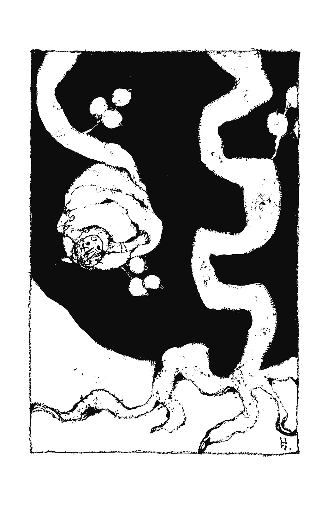
砂の星
オロ星の怪植物は、豆のさやのようなものを空へ投げ上げつづけている。そのひとつを、宇宙船が採集して戻ってきた。調べてみると心配していたとおり、やはり種子だった。その飛び方は、少しずつだが、しだいに高くなっていくようだ。
オロ星人たちは、困りきった顔で話し合った。
「このままだと、やがては大気の外へも飛び出し、宇宙を流れはじめるだろう」
「そして、ほかの星までだめにしてしまうのだ。それを見ながら、なんの手も打てない。くやしくてならないな」
植物退治の研究のほかに、宇宙へ流れ出るのを防ぐ研究もしなければならなくなった。だが、いずれもまだ名案が立っていない。
そばで聞いていたハルコが、突然言った。
「そうだわ、あれを使えばいいかもしれないわ......」
テリラ星のことを思い出したのだ。あそこでは大きな鳥が、かたい木の実を、飛びながらくちばしで突ついていた。それを利用したらどうだろう。
プーボも口を出した。
「その卵をいくつか持ってきています。かえしてみましょうか」
その案は実行に移された。オロ星人は卵を早くかえす装置、鳥を早く育てる薬品などを持っていた。そのため、すぐに大きくなった。また、育てながら、命令どおりにやるよう訓練をした。
やってみると、鳥たちはよく働いてくれた。空を舞いつづけていて、植物が種子を投げ上げると、飛びかかって、くちばしでうち落とすのだ。
夜になると、鳥たちは、海の船へ戻ってくるよう訓練されている。陸上で眠ると、植物にやられてしまうおそれがあるからだ。
「あのおそろしい鳥も、訓練によっては、ずいぶん役に立つものね」
と、ハルコは感心した。鳥の数をふやせば、種子が宇宙へ飛び出すのを、いちおうは防げそうだった。
そのため、キダやミノルたちは、テリラ星へ卵を集めに行くという仕事を引き受けることにした。
宇宙船には、こんどもデギが同乗することになった。途中にあった荒れはてた星を、もっとよく調べるためだった。万一の場合には、オロ星の人びとは、そこへ逃げなければならないのだ。
宇宙船は、オロ星の月の基地を出発し、まず荒れはてた星に立ち寄った。空気も水もありながら、生物がなにひとついない星というものは、なんとなく変な気持ちだ。きみが悪い。
みなは宇宙服を着て外へ出た。砂原だけが、はてしなくひろがっている。歩きはじめてしばらくすると、ミノルが叫んだ。
「なんでしょう。あのへんでキラリと光ったものがあった」
その方角に歩き、近よって拾い上げてみると、それは金貨だった。わけのわからない文字と、もようとがしるされてある。
みなはふしぎがった。地球のものでも、オロ星のものでもないのだ。この砂だけの星の上に、なぜ金貨が落ちているのだろう。別な宇宙人のものなのだろうか。
そのうち、金貨をながめていたプーボは、もようが、この星の陸地の形に似ているようだと言った。
「となると、この星で作られた金貨ということになる。しかし、どう見ても、文明はおろか、生物ひとつない星だが......」
と、デギが首をかしげると、キダは言った。
「あるいは、大むかしに、なにかが起こって、ほろびたのかもしれない。もっとくわしく調べてみることにしよう」
みなは注意ぶかく歩きまわった。そして、遺跡を発見することができた。石でできた大きな建物だが、風に運ばれた砂で、大部分がうずまっていた。なにげなく見ていたら、気がつかなかったかもしれない。
そのようすから、地球でいえばエジプト時代ていどの文明が、この星にかつて存在したらしいと思われた。
「それが、どうしてほろんじゃったのかしら。原爆戦をやったとは考えられないし、悪い病気でも、植物まで死ぬはずはないし......」
と、ハルコが言った。キダは入り口をみつけて、建物のなかに入り、その内側の壁を見て、みなを呼んだ。
「その手がかりになりそうなものがあるぞ。ここに絵が描いてある......」
なかは静かで暗かった。だが、ライトをあて、その絵を、順を追って見ると、おおよそこんなことがわかった。むかし、この星に大変な害虫が発生したのだ。
カブトムシのような形だった。それがたくさんふえ、あらゆる植物を食い荒らしはじめたのだ。それと戦い、なんとかして防ごうとするが、虫のほうが強力だ。動物も死に、住民たちは食べ物がなくなり、しだいにほろんでいった。
この絵は、なんのために描かれたのだろう。
いつの日か訪れる、ほかの星の人への注意のためなのだろうか。ただ、悲しい最後を描いておきたかっただけのことなのだろうか。それは知りようがなかった。
虫は陸上ばかりでなく、ついには水中の海草までも食いつくし、このような、動くもの一つない星にしてしまったのだろう。
「かわいそうな事件ね。宇宙では、いろいろな悲しいことが起こっているのね」
と、ハルコが涙ぐんで言った。しかし、デギは、まったく別な言葉を口にした。
「わたしはその害虫を、なんとかして手に入れたい。あらゆる植物を食いつくし、このような砂だけの星に変えてしまった、すごい虫です。これなら、オロ星の怪植物をやっつけてくれるのではないかと思えるのです。わたしはこの星で、それをさがしたい」
「テリラ星で鳥の卵を集める仕事のほうは、簡単なことですから、わたしたちだけでやってもいいですよ」
「お願いします。そのあいだに、わたしはその虫の卵をみつけます。寒い地方の海岸の砂のなかあたりに、きっと残っているでしょう」
「では、食料品や必要な物を残していきましょう。ご成功を祈ります」
と、キダは言い、デギに別れをつげ、宇宙船を出発させた。
テリラ星で鳥の卵をたくさん集め、帰りに砂の星に寄ると、デギは大喜びしていた。
そして、持っていたびんのなかの白い粒を見せた。
「とうとうみつけましたよ。これがそうです。たくさんあるでしょう。これをふやして使えば、さすがの怪植物も全滅してしまうでしょう」
「よかったですね、でも......」
と、ミノルは言った。
「植物をやっつけたはいいが、つぎには、手のつけようのない虫に、悩まされることになるんじゃないでしょうか」
虫を調べる
砂の星でデギがみつけた虫の卵。それをながめて、キダやミノルやハルコは話し合った。
「ほんとうにすごい虫で、オロ星の植物よりも強いのだろうか......」
「そうだとしても、へたに使ったら、ここのように、砂だけの死の星にされてしまうかもしれないな」
しかし、いくら話してみてもわからないことだ。ひとまず、オロ星の月の基地へ帰ることにした。
出発の前に、みんなは宇宙船をよく洗った。卵をくっつけて持ち帰り、大さわぎのもとになったら困るからだ。月の基地では、人びとが待ちかねていた。植物が空に投げ上げる種子の数が、だんだん多くなってきている。うち落とすための鳥も、ふやさなければならないのだ。
だから、運んできた鳥の卵は、すぐにそのために使われた。宇宙へ進出しようとする植物と、あくまで防ごうとするオロ星人との戦いだ。それは休むことなくつづいている。
だが、このままでは、そのうち突破されてしまうことだろう。早いところ、植物を退治する方法をみつけなければならない。
会議が開かれた。そして、虫の性質をよく調べるため、砂の星に研究所を作るという方針がきまった。また、キダやミノルたちが、その仕事を引き受けることになった。
砂の星に小さな家が建てられた。みなはそこに住み、まわりにオロ星から運んできた、いろいろな植物の種子をまいた。
しかし、怪植物の種子は持ってこなかった。虫との力くらべをやらせてみたいのだが、ここでふえはじめたら、手のつけようがなくなるからだ。
いっぽう、虫の卵をかえしてみた。虫の力は考えていた以上にすごいものだった。大きなカブトムシのような形で、たちまちのうちに植物を食いつくしてしまう。
ある夜、寝ていたハルコはゴソゴソという音で目をさました。それから、あたりを見て大声をあげた。
「あら、大変よ。虫が入ってくるわ......」
戸のすきまから、つぎつぎに虫が入ってくる。わずかな時間で、たくさんにふえたらしい。
キダも叫んだ。
「あ、食べ物がやられている」
虫たちは、パンの粉や、ほしブドウなど、植物からとれた品をねらってやってきたのだ。さらに、紙でできたものまで食われかけていた。
人間は襲わないようだが、飛びつかれると、いい気持ちではない。ミノルは、そばにあった殺虫剤をまいてみたが、なんのききめもなかった。
プーボは、虫をつかんで外へ捨てようと、窓をあけた。そのとたん、かえって多くの虫が入ってきてしまった。みなは家から逃げだし、宇宙船へと避難した。
つぎの日に行ってみると、家の中はさんざんに荒らされていた。もめんのシーツまで、あとかたもなく食べられてしまっていた。この星のむかしの住民たちは、こうして生活ができなくなり、うえ死にしていったのだろう。
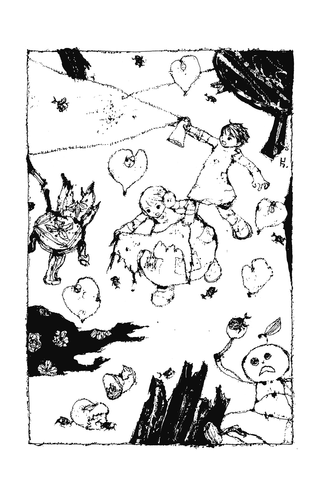
しかし宇宙船のなかには栄養剤が残っていたので、みなの食事は、なんとかなった。
「これからは毎日、栄養剤だけを食べることになるわけか。つまらないな」
と、ミノルがこぼした。
虫の強さと、ふえかたの早さとはよくわかった。つぎに知りたいのは、退治法だ。キダは、いろいろな殺虫剤を使ってみたが、どれもだめだった。
もっとも、絶対に死なないわけではない。寿命がくれば死ぬし、食べる植物がなくなれば死ぬ。しかし、あとにはたくさんの卵が残り、いつふえはじめるのかわからないのだ。
虫の卵は丈夫で、薬でも、熱でも、電波でも死なないのだった。虫が怪植物をやっつける力を持っていたとしても、これでは困る。キダは、虫の力だけを利用する方法はないかと、その研究をつづけた。
虫の口から出る液体を集め、それを植物にふりかける実験もやってみた。しかし、すぐ使わないとききめがなかった。ここからオロ星に運んでいくうちに、役に立たないものになってしまう。
虫に放射線を当てたら性質が変るのではないかと思い、それもやってみた。しかし、虫は放射線を受けつけなかった。
なにも成果があがらず、むだに何日かがすぎていった。
そのうち、デギが宇宙船でやってきて言った。
「虫の研究はどうですか」
「それが、じつは、あまり進んでいないのです......」
と、キダがいままでのことを説明した。ミノルはオロ星の植物のことを聞いた。
「怪植物のほうはどうですか」
「空へうちあげるタネの数が、ますますふえてきました。鳥の力ではまにあわない。前よりもずっと高く飛ぶようになり、大気の外へ出るのまで現われた......」
と、デギは、ため息をついた。
「いまのところは宇宙船が見張り、小型ミサイルをぶつけてうち落としていますが、月の基地で作るミサイルより、タネのふえかたのほうが、ずっと早い」
「とすると、やがては突破されてしまうでしょうね」
「そうなのです。こうなったら虫を使う以外にないと、みなの意見がまとまりました。きょうは、それを伝えにきたのです」
「しかし、もう少し研究してからのほうがいいでしょう。この虫が怪植物に勝てたとしても、あとが大変ですよ。この星のように、砂だけになり、永久に植物が育たない。植物をうえても、すぐに卵がかえって、虫が食べてしまうからです」
と、キダが注意したが、デギははっきり言った。
「そのことも、みなは覚悟しています。いまは怪植物が問題なのです。このままだと、宇宙ぜんたいが迷惑します。しかし、虫のことはオロ星だけの問題ですみます」
オロ星の人たちは、ほかの星々のこともよく考えて、こう決心をしたのだった。
鳥の支配するテリラ星へでも、長い年月をかけて移住すれば、なんとか生きのびることもできる。そのため、早く虫をふやして運んできてもらいたいというのだ。
「しかし、そうはいっても......」
と、キダはどうしたものかと迷った。いまが重大な場合なのだ。
みなはデギも加えて、虫の力だけを利用し、あとに問題を残さないうまい方法はないかと考えた。時間をかけて研究すればできることかもしれない。だが、急がなければならないのだ。
みなが、だまったまま顔を見合わせているとき、突然、プーボが言いだした。
「ひとつ名案を思いつきましたよ......」
作戦開始
「いったい、名案て、どんなことだい。これだけ考えて、まだみつからないんだよ」
と、みなは驚いたような声で、いっせいに聞いた。プーボはもったいぶって答えた。
「つまりです、虫を働かせて、あとに面倒な問題を残さないようにすればいいわけでしょう」
「そうだよ、それを知りたいんだ。早く教えてくれよ」
「こうすればどうでしょう。虫の雄だけを選びだして、それを使うのです。雄は卵を産みません。だから、しばらくすると寿命がつきて死んでしまいます」
「ほんとだ......」
ミノルもハルコも感心した。こんなことになぜ気がつかなかったのだろうと、ちょっとくやしかった。キダはうなずきながら言った。
「うん、たしかにいい方法だ。しかし、それにはここで虫をふやし、雄だけを選んで運ぶという仕事をしなければならない。その時間が残されているかどうかだ......」
「基地へ連絡してみます」
と、デギが言い、オロ星の月の基地と、無電で話し、いまの考えを報告した。
返事はこうだった。ぜひその作戦を進めたい。基地で手のすいている人員や、あまっている資材は、すべてそちらに送る。全力をあげてその計画にとりくむように。
怪植物の種子は、宇宙をめざして飛び出そうとしつづけているが、あとしばらくは、なんとか食いとめることができるだろうとのことだった。
基地からの返事につづき、何台もの宇宙船が、砂の星へ到着した。力を合わせ、大急ぎで虫をふやそうというのだ。
ふやすのは簡単だった。植物性のものを与えさえすればいい。虫たちはそれを食べながら、どんどんふえてゆく。
この星のむかしの住民たちは、なんとかして虫をへらそうと苦心し、それができずにほろんでいった。しかし、いまはその反対のことをやっているのだ。そう考えると、なんだか、妙な気分だった。
虫は、たちまち数えきれぬほどになり、重なりあってあたりをはいまわっている。それをながめて、ハルコはミノルに言った。
「かわいいところがなく、美しい声も出さず、気持ちが悪いわね」
「だけど、そんなことを気にしている場合じゃないよ」
面倒なのは、雄を選ぶ仕事だった。たとえ一匹でも、雌がまざっていてはいけないのだ。雌がまぎれこんだら、オロ星は永久に、ここと同じく砂だけの星になってしまう。
しかし、そのうちに、昆虫学者と機械技師との協力で、雄と雌とをよりわける装置が作られた。おかげで、そのスピードは早くなった。
えさのつづくかぎり虫をふやそうと、みなは、その作業に熱中した。
いっぽう、オロ星の月の基地では、別な用意が進められていた。虫が怪植物に勝ってくれた場合でも、オロ星の地上は一回は丸坊主になってしまう。すべての植物が、食べつくされるおそれがあるのだ。
あとでまた植物をふやすために、種子を集めて、とっておかなくてはならない。また役に立つ動物や虫も、安全なところで冬眠させておかなくてはならない。
人びとはまだ怪植物にやられていない地方に着陸し、その作業を進めた。なかには、こんなことを話し合っていた者もあった。
「地球人のキダから聞いたのだが、地球にはノアの箱船という伝説があるそうだ。大水で世界がめちゃめちゃになるが、船に乗せておいた動物たちが生き残り、人間とともに、ふたたび新しい時代が栄えたという物語だよ」
「いまの仕事もそれと似ているな。害虫だの雑草は、ちょうどいいから、ほっぽっとくとするかな」
実行の時は迫ってきた。
砂の星では、虫がずいぶんふえた。もっとふやしたいのだが、ぐずぐずしてはいられない。宇宙へ飛び出そうとする怪植物の種子が、さらに数をましたのだ。もう、これ以上は待てなくなった。
雄の虫だけを積みこんだ宇宙船が、つぎつぎと出発した。これが成功するかどうかにオロ星の運命がかかっているのだ。いや、宇宙の運命がかかっているともいえる。
先頭の宇宙船には、キダやミノルたちが乗っていた。やりそこなったら、いずれは地球も怪植物にやられるのかと思うと、心配で落ちつかなかった。
宇宙船はオロ星の陸の上を低く飛び、虫をばらまいた。虫は大粒の雨のように散り、勢いよく植物に飛びつき、手あたりしだいに食べはじめた。なにも残らない、砂だけの地面がふえてゆく。
虫のなかには、問題の怪植物に飛びついたのもあるはずだ。さあ、どうなるだろう。
キダやミノル、ハルコ、プーボは宇宙船からヘリコプターに乗りかえ、それを調べるために、地上へさらに近づいた。
なかから望遠鏡で見つめた。だが、怪植物は、ほかの草や木のように、あっさりとは食べられてしまわない。
虫のほうも手ごわい相手だと気がついたようだ。なかまと連絡しあったらしく、どの虫も怪植物めがけて集まった。この強敵をやっつけておかないと、あとがうるさいと感じたのだろう。
月の基地からは、いらいらしたような声で、ヘリコプターに無電で聞いてきた。
「どうだ、ようすは......」
「まだわかりません。なにしろ、いままで無敵だった植物と、どんな植物も食べつくしてきた虫との戦いなのですから」
「虫は勝ちそうか」
「虫は力を合わせて、怪植物にむかっています。植物も苦しいようです。タネを作って宇宙へ投げ上げるどころではないようです......」
キダはいちいち報告した。月の基地では、だれもが成功を祈りながら聞いていることだろう。基地からは、また質問してきた。
「飛び出してくるタネは、めっきり少なくなった。地上ではうまくいっているのか」
「いや、なんともいえません。植物のほうは、虫を退治しようと、ネバネバした液を出しはじめました。それがくっつくと、虫の動きが弱まるようです」
「はっきりいって、どうなりそうだ」
「わかりません。虫のほうも、同じように液体を口から出しています。植物の液の作用を、やわらげるためのようです。しかし、正直なところ、虫のほうが、少し押されぎみのように見えますね......」
「それは困ったな」
月の基地ではがっかりしたらしく、ため息のまざった声が伝わってきた。ミノルたちもそうだった。もし、この作戦が失敗に終ったら......。
勝利の日
オロ星の地上では、怪植物と虫たちの戦いがくりひろげられた。それはなかなか勝負がつかず、何日もつづいた。
おたがいに相手をやっつけようと、ネバネバした液を出している。怪植物は種子を作って宇宙へ飛ばすのをやめ、虫をやっつけるのに熱中している。虫たちもぜがひでも食いつぶそうとしている。
しかし、やがて虫たちのほうが負けそうになってきた。だんだん動きがにぶくなる。虫をもっとたくさん使えばよかったのかもしれないが、いまからではまにあわない。
ヘリコプターのなかからようすを見ているキダやミノルたちは、気が気でなかった。虫が負けたら、もう方法はないのだ。
「虫勝て、植物負けろ」
と、祈ったり、叫んだりした。だが、声で応援しても、なんの役にも立たない。
ミノルはそばにあった光線銃を手にし、植物にねらいをつけた。プーボが止めた。
「そんなことしても、だめです。光線銃のききめのないことは、わかってるはずです」
「だけど、なにかをしなければ、いられない気持ちなんだ」
と、ミノルは引き金をひいた。高熱の光線がほとばしった。
そのとき、思いがけないことが起こった。命中したところで爆発が起こったのだ。植物と虫とが死にものぐるいになって出した液。それがまざりあって、きわめて爆発しやすいものになっていたらしい。
爆発は一部分だけではなかった。葉からつるへと爆発はつづき、一つの怪植物はこなごなになった。また、その飛び散った熱で、ほかの怪植物もつぎつぎに爆発していった。
時間があれば、植物も爆発しないように、自分の性質を変えたにちがいない。しかし、あまりに突然だったのだ。
「あぶない......」
と、キダが言い、ヘリコプターを上昇させた。爆発の風で機体がゆれたのだ。それに、うかうかしていると、こっちまで火が移ってくるかもしれない。
「すごいながめね」
と、ハルコが言った。高くあがって見おろすと、爆発がどんどん広がっていくのがわかった。赤く輝く火を散らし、外側へ外側へと広がっていくのだ。
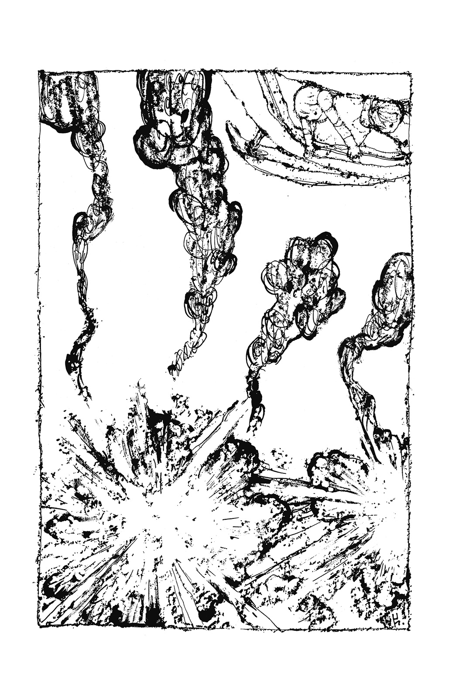
夜になると、限りない数の花火を上げているようで、雄大な美しさだった。それは月の基地にいる人たちも見ることができた。
キダはヘリコプターを飛ばし、各地で光線銃を使った。こうすれば、怪植物の全滅も早くなるはずだからだ。
しかし、爆発しつくしてしまうには、けっこう時間がかかった。いちおうおさまってから、みなは着陸し、ようすを調べるために外へ出た。
手ごわかった怪植物も、いまは灰になって、あとかたもない。
「みんなこなごなになっちゃったようね。いいきみだわ」
と、ハルコが言った。プーボはくわしく調べてから報告した。
「地面の中の根まで、こなごなです。もう大丈夫でしょう」
「そうとは言いきれない。まだタネがどこかに残っているかもしれない。早くその問題にとりかかろう」
と、キダは言った。種子が残っていると、植物はまた息を吹きかえし、こんどこそとりかえしのつかないことになる。
キダは無電で月の基地に連絡した。
「怪植物は全滅しました。しかし、タネさがしをしなければなりません。そのために、あらゆる人と資材とを使ってください」
もし残った種子をみつけたら、すばやく入れ物にとじこめる。栄養物がなければ生長しないのだ。これを急いでやらなければならない。
その作業がはじめられた。手わけをして地上をくわしく調べたが、種子は残っていないようだった。虫との戦いがはじまってから、植物は種子を作るどころではなくなっていたのだろう。それまでの種子は、すでに植物に生長していたのだ。
それでも、しばらくは心配だった。どこかにひとつでも残っていると大変なのだ。
しかし、何日かすぎても、怪植物はどこからも育ってこなかった。
「やれやれ、やっと終ったようだ」
「なんという、長い苦しい戦いだったろう。まだ終ったと信じられない気分だ」
オロ星人たちは、キダやミノルたちと顔を見合わせ、大きくため息をついた。だれも疲れきっており、倒れる寸前だった。もう少し長びいたら、どうなっていたかわからない。
怪植物は爆発ですっかりほろんだが、虫はまだいくらか残っていた。そして、ほかの植物を食べつづけている。
しかし、虫は、もはやふえず、しだいに数がへってゆき、そのうちに、まったくいなくなった。雌の虫がまざっていなかったので、卵が残らなかったのだ。
テリラ星からつれてきた強く大きな鳥たちは、あいかわらず飛んでいた。だが、なれているのでおとなしい。種子をうち落とす仕事がなくなり、そのうち力を持てあましてあばれはじめるかもしれないが、退治できない強敵ではない。
残る問題は、砂の星にいる虫たちだ。しかし、よそへ広がる心配はない。注意をしながら研究すれば、退治法をみつけることができるだろう。
なにもかも一段落だった。しかし、ひと休みするわけにはいかない。やることはたくさんある。
まず、海底の都市に連絡した。そこでは、大ぜいのオロ星人たちが、不安な夢を見ながら冬眠しつづけているのだ。
「われわれは勝った。もう安心です」
しらせを受けて、人びとは長い眠りからめざめ、つぎつぎに地上へ戻ってきた。その人たちは、手のつけようもなく強かったあの怪植物が、すっかりほろんでいるのを見て、ほっとした。
もちろん、地上はずいぶん荒れはてている。建物や橋はこわれ、畑や牧場もめちゃめちゃだ。しかし、力を合わせて努力すれば、やがては、むかし以上に栄えることができるのだ。
それに、むかしとちがって、科学を利用したり、宇宙に進出する時には、よく注意しなければならないことが、身にしみてわかっている。もう、かるがるしいあやまちは、二度と起こさないだろう。
人びとは、冬眠中に行なわれた、植物を退治する戦いの苦心を聞き、キダやミノル、ハルコやプーボたちの手伝いを知り、心からお礼を言った。それから、みなで、
「ばんざい」
をとなえた。それは大きく明るく力強く、宇宙のはてまでとどくかと思われる声だった。
頭の中の未来
星マリナ
この本に入っているお話は、ＳＦ（サイエンス・フィクション）といいます。サイエンスは、科学。フィクションは、作り話。つまり、科学的に考えてありえそうな話、ということです。
これらのお話が書かれたころ、私は小さな子供でした。今当たり前に使っているいろいろなものが、まだなかった時代です。例えば、私が赤ちゃんのころの写真はみんな白黒です。電話といえば黒くて重く、ダイヤルを「ジー、ジー」と音を立てて回していました。目覚まし時計は、毎晩ネジを巻かないと止まってしまうのでした。
洗濯機が止まるとびしょびしょにぬれた洋服をローラーにはさんで絞り、コピー機がないので何でもえんぴつで書き写していました。そうそう、ビデオやＤＶＤなど、テレビを録画する方法がなかったので、どんなに好きなテレビ番組もそのとき家にいなかったら、もうそれっきり見られなかったのです。
そんな家の二階で、私の父、星新一は毎日ＳＦを書いていました。父は、電子レンジをはじめて買ったとき、その前に立って「不思議だなー。どうなっているのか、全然わかんないな」なんて言っていたくらいですから、もちろん「万能スパイ用品」や「プーボ」を自分で作れたわけではありません。でも、「いつかこんなことが可能になったら、こんなことが起きるかもしれない」と想像することにかけては、特別な才能があったみたいです。
インターネットも携帯電話も、まずどこかで誰かが「こんなものがあったらいいな」と想像してみたから存在するのです。それは技術的なことばかりではありません。社会の仕組みや職業、人間の生き方などもそうです。
お話を読んだ人に、「こんな世界だったらいいな」、「でもこんなだったらいやだなー」と、未来についていろいろと想像してもらえたら、きっと父も「ＳＦを書いてよかったな」と思うことでしょう。
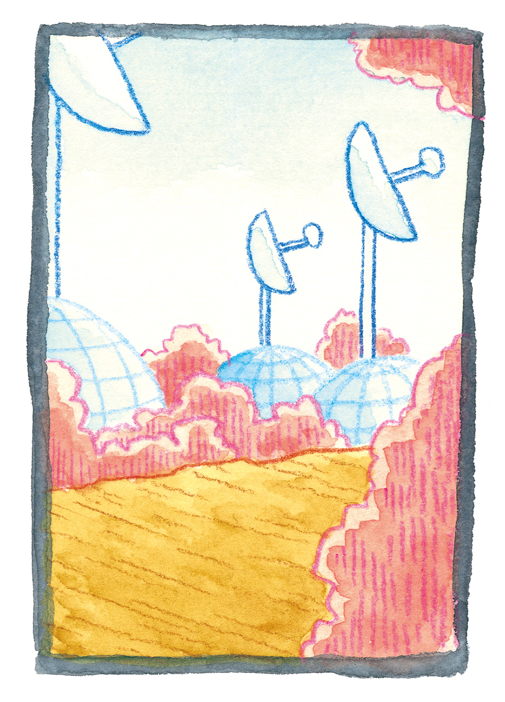
初出一覧
「ふしぎな放送」「おみやげ」「サーカスの秘密」「へんな怪獣」「地球のみなさん」
＊角川文庫『きまぐれロボット』（１９７２年初版発行／２００６年改版初版発行）
「歓迎ぜめ」「廃屋」「宝島」「ヘビとロケット」「変な侵入者」
＊角川文庫『ちぐはぐな部品』（１９７２年初版発行／２００６年改版初版発行）
「宇宙の声」
＊角川文庫『宇宙の声』（１９７６年初版発行／２００６年改版初版発行）
本書は改版初版発行のものにルビをつけ、読みやすくしたものです。
星 新一／作
１９２６年東京生まれ。東京大学農学部卒。57年日本で初めてのＳＦ同人誌「宇宙塵」の創刊に参加。家業である星製薬株式会社社長を経て、68年『妄想銀行』で第21回日本推理作家協会賞を受賞。ショートショートの第一人者として１００１以上の作品を発表した。著書に『きまぐれロボット』『ちぐはぐな部品』『宇宙の声』『ごたごた気流』『竹取物語』（いずれも角川文庫）ほか多数。97年、永眠。
ＵＲＬは２０１４年３月現在のものです。
あらゐけいいち／カバー絵
12月29日群馬県生まれ。漫画家／イラストレーター。２００６年より「月刊少年エース」（角川書店）にて漫画『日常』を連載。
片山若子／挿絵
イラストレーター。角川文庫の星新一改版シリーズ、米澤穂信『春期限定いちごタルト事件』（創元推理文庫）ほか、ミステリ系の本のカバーが多数。
装丁 ムシカゴグラフィクス
宇宙の声
星新一ジュブナイル・セレクション
作 星新一
カバー絵 あらゐけいいち
挿絵 片山若子
平成26年3月15日 発行
(C) Kayoko Hoshi 1972, 1976
(C) Keiichi Arawi 2014
(C) Wakako Katayama 2006, 2009
本電子書籍は下記にもとづいて制作しました
角川つばさ文庫『宇宙の声 星 新一ジュブナイル・セレクション』
平成21年11月15日初版発行
平成26年3月10日再版発行
発行者 山下直久
発行所 株式会社ＫＡＤＯＫＡＷＡ
〒102-8177 東京都千代田区富士見2-13-3
03-3238-8745（営業）
編集 角川書店
〒102-8078 東京都千代田区富士見1-8-19
03-3238-8555（編集部）
http://www.kadokawa.co.jp/